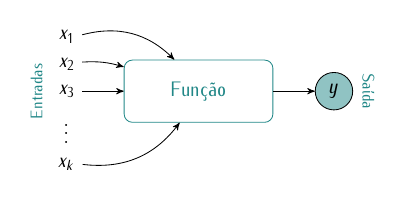
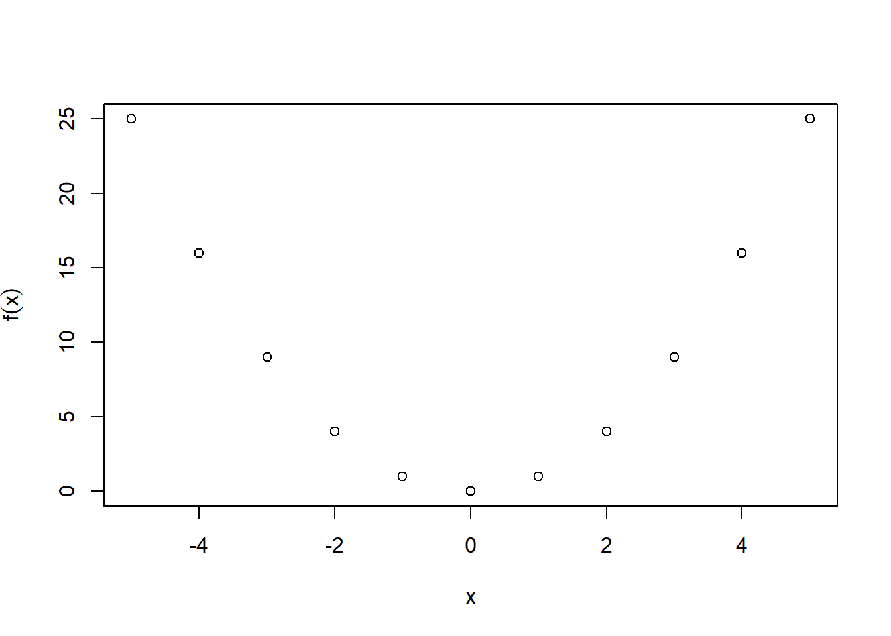
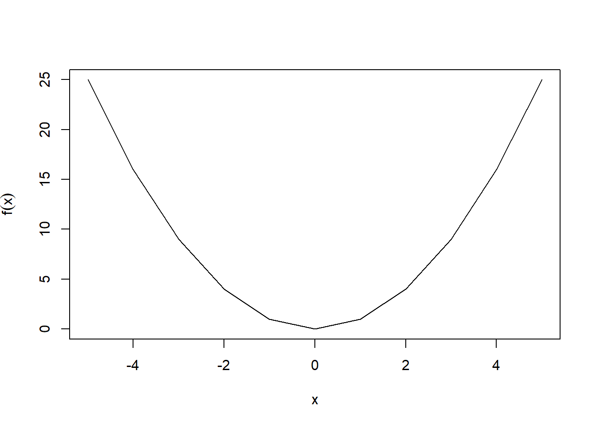
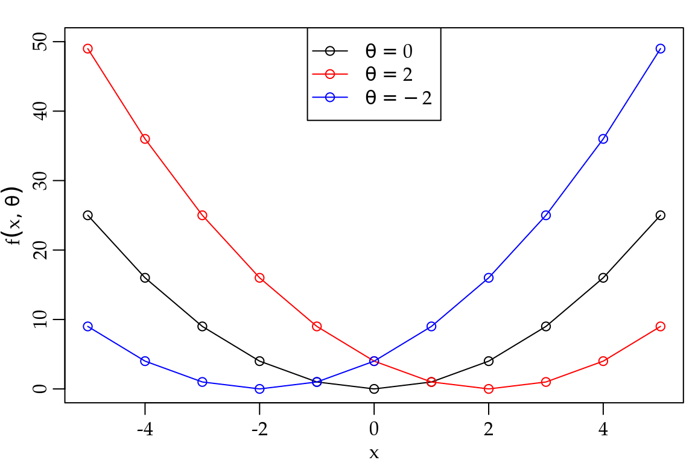
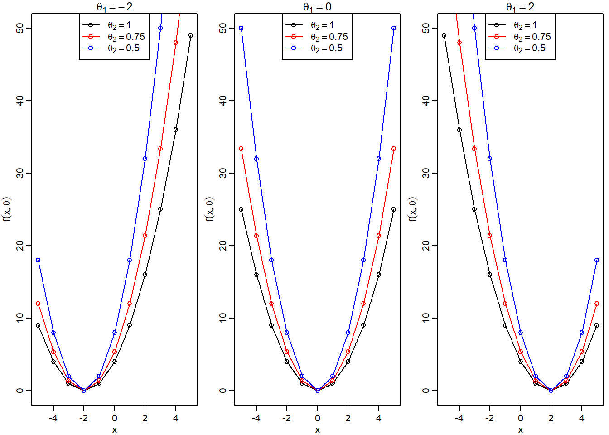
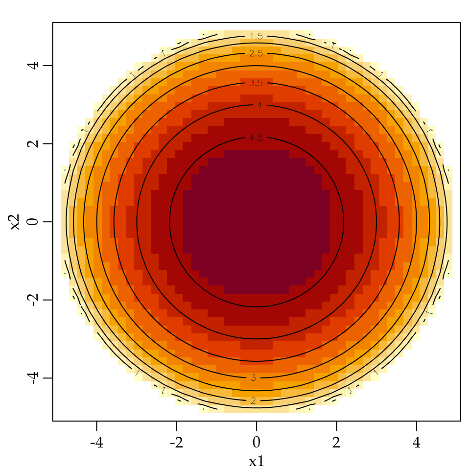
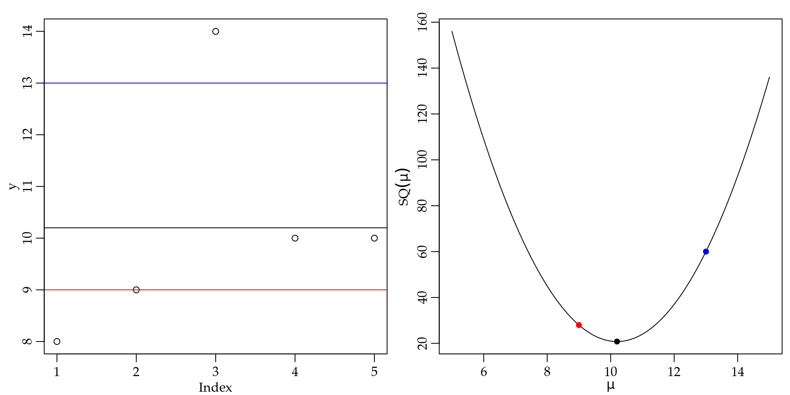
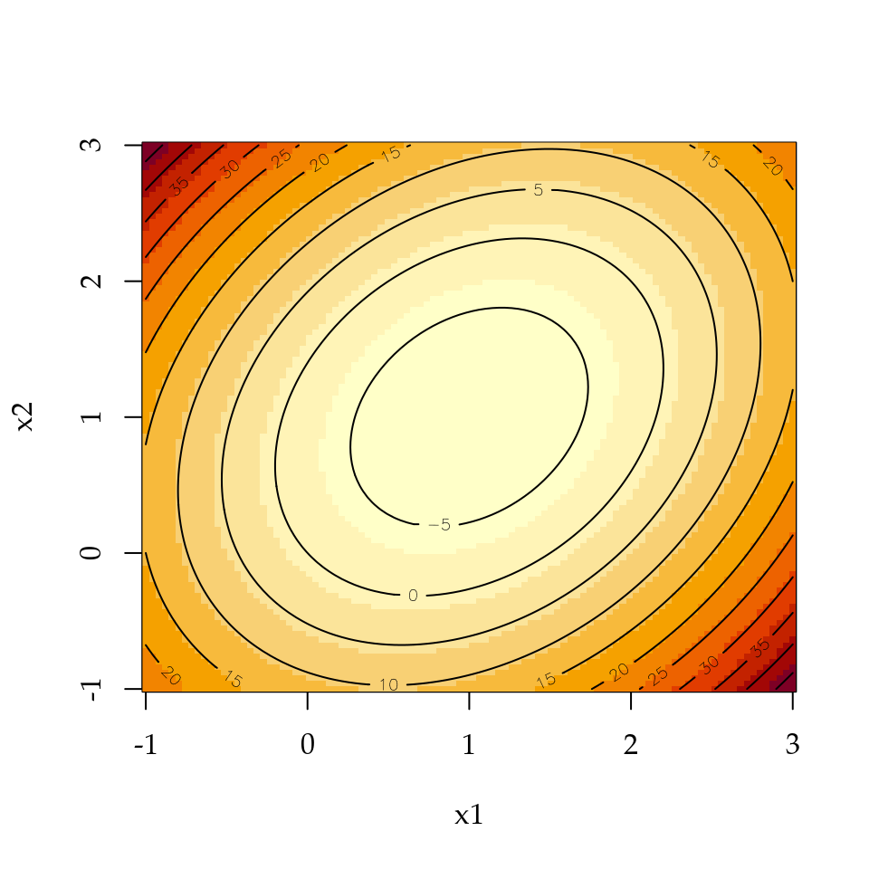
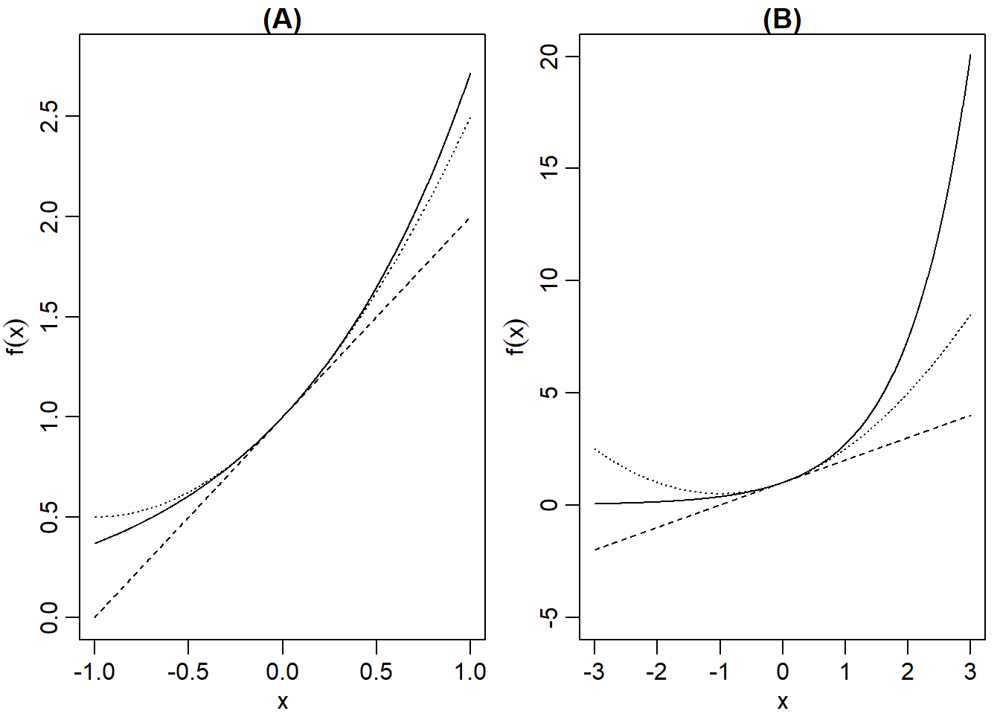

1 Cálculo Diferencial e Integral
No contexto de ciência de dados grande parte dos problemas de previsão, classificação, agrupamento, prescrição, entre outros são resolvidos por meio de uma “modelagem.” O termo modelo é usado de várias formas em estatística e aprendizado de máquina, mas de forma ampla podemos entender os modelos como sendo representações simplificadas da realidade. Neste sentido, modelos são fundamentais para a extração de conhecimento dos dados. Em termos matemáticos um modelo nada mais é que uma função que objetiva representar como o cientista imagina ou supõe que a realidade está sendo gerada e refletida por meio dos dados.
O objetivo deste capítulo é introduzir a ideia de funções e como avaliar o seu comportamento em termos de suavidade e pontos de interesse, por exemplo, quando uma função atinge o seu maior ou menor valor. Para ilustrar o uso de funções e de suas propriedades, nós vamos construir um dos modelos mais simples em ciência de dados: o modelo de regressão linear simples. No nosso caminho até o modelo de regressão linear simples vamos esclarecer qual a origem e porque a média aritmética, que é também um modelo, é tão popular em ciência de dados.
1.1 Funções, limites e continuidade
Para motivar a ideia de funções imagine que você vai até um agente de seguros para fazer o seguro do seu carro. O agente de seguros com certeza irá fazer uma série de perguntas sobre o veículo, você e seus hábitos. Exemplos usuais de perguntas incluem a sua idade, sexo, estado civil, qual o uso do veículo, onde você costuma estacionar além do modelo e ano do veículo. A partir destas questões a seguradora faz algum processamento, ou seja, usa um modelo para avaliar o risco que você traz para a companhia e consequentemente calcula o valor que você deve pagar pelo seu seguro.
O importante é você notar o fluxo das informações. Existe um conjunto de entradas: as respostas que você forneceu. Estas respostas são submetidas a algum processamento e ao final existe uma saída, neste caso o preço do seguro. A Figura 1.1 fornece uma ilustração simples da ideia de função.
Na ilustração da Figura 1.1 as variáveis de entrada foram genericamente denotadas por \(x_1\), \(x_2\), \(x_3\), \(\ldots\), \(x_p\) o que significa que temos \(p\) entradas. No exemplo do seguro as entradas são as respostas para as \(p\) perguntas. As respostas são processadas dentro da função e então uma saída \(y\) é gerada. Esta ideia simples pode ser adaptada para uma infinidade de situações práticas no contexto de análise preditiva, classificação, agrupamento entre outras. Alguns exemplos são a concessão de crédito, detecção de potenciais clientes, detecção de softwares ou operações maliciosas entre diversas outras.
Para qualificar um pouco nosso entendimento de funções é importante entender que tipo de números podem ser inseridos na função e que tipo de número ou números a função deve resultar. Os números racionais são os números da forma \(\frac{a}{b}\), sendo \(a\) e \(b\) inteiros e \(b \neq 0\). Denotamos o conjunto dos números racionais por \(\mathbb{Q}\), ou seja,
\[ \mathbb{Q} = \left \{ \frac{a}{b} | a, b \in \mathbb{Z}, b \neq 0 \right \} \]
onde \(\mathbb{Z} = \{\ldots, -3, -2, -1, 0, 1,2,3, \ldots \}\) é o conjunto dos números inteiros. A notação acima é lida da seguinte forma: \(\mathbb{Q}\) é o conjunto dos números \(a\) dividido por \(b\), tais que \(a\) e \(b\) são inteiros e \(b\) é diferente de zero. Note que a divisão por zero não é definida. De forma similar, indicamos por \(\mathbb{N}\) o conjunto dos números naturais:
\[ \mathbb{N} = \{0,1,2,3,\ldots \}. \]
Não é possível escrever todos os números como a razão entre dois números inteiros, então ao conjunto de números que não são racionais chamamos de irracionais. Por fim, a união de todos os tipos de números mencionados anteriormente, chamamos de números reais e denotamos por \(\Re\). De forma geral, em ciência de dados, vamos fazer distinção apenas entre os números inteiros, os quais algumas vezes estaremos interessados apenas nos não-negativos, ou seja os naturais, e os números reais. Esta distinção também é usada na maioria das linguagens de programação e o R não é uma exceção. Com este conjunto de conceitos estamos aptos a definir o que é uma função.
Definição 1.1
Uma função escrita como \(y = f(x)\) associa um número \(y\) a cada valor de \(x\).
Na Definição 1.1 temos a variável de entrada \(x\), também chamada de variável independente ou argumento da função \(f(\cdot)\). O conjunto de valores que \(x\) pode assumir é chamado de domínio de \(f(x)\) e denotamos por \(D\). Como resultado da aplicação da função no ponto \(x\) temos \(y\), que é chamada de variável dependente. A imagem de f(x) denotada por \(I\) é a faixa de valores que \(y\) pode assumir. Note que em geral o domínio e a imagem são intervalos definidos em termos dos tipos de números que já discutimos: naturais, inteiros, racionais, irracionais, reais ou possíveis intervalos dentro destes. Por exemplo, o intervalo \((0,1)\) representa o conjunto dos números reais entre \(0\) e \(1\), sendo que ambos \(0\) e \(1\) não pertencem ao intervalo. Em termos de notação temos o seguinte:
\[ \begin{equation*} \xrightarrow[\text{Independente}]{x \quad \in \quad D} f(x) \xrightarrow[\text{Dependente}]{y \quad \in \quad I}. \end{equation*} \]
Como já mencionado, a imagem e o domínio de uma função são intervalos. Neste texto vamos fazer distinção entre intervalos aberto e fechado usando a seguinte notação:
- Intervalo aberto não contém as extremidades: notação \((a,b)\).
- Intervalo fechado contém as extremidades: notação \([a,b]\).
Em linguagem R podemos definir ou criar uma função de forma muito similar ao que fizemos em termos de notação matemática. A partir deste momento, recomendamos que você escolha o seu editor favorito de R como por exemplo o RStudio ou qualquer outro e comece a executar os códigos que serão apresentados no decorrer do texto. Veja a estrutura de uma função em R no Código 1.1.
Código 1.1 Estrutura de função em R.
minha_funcao <- function(x) {
y <- 'algum processamento com x'
return(y)
}No Código 1.1 definimos uma função chamada de minha_funcao. Esta função recebe uma entrada x, faz algum processamento com x, armazena o resultado deste processamento em um objeto chamado y e retorna o valor de y. Interessante notar que grande parte das linguagens interpretadas como R e python são automaticamente tipificadas. Isso significa que não precisamos definir o tipo de valores que serão as entradas e saídas das nossas funções. Isto está em contraste com outras linguagens como C e C++ em que o programador precisa definir o tipo das entradas e das saídas no corpo da função.
Para materializar esta ideia definimos a função \(y = x^2\), ou seja, para cada entrada de \(x\) retornamos \(y\) que é o quadrado da entrada. Em R temos a seguinte função:
minha_funcao <- function(x) {
y <- x^2
return(y)
}Criada a função podemos avaliá-la em alguns pontos para ver o seu comportamento. Por exemplo, \(f(x = 2)\) significa avaliar a função no ponto \(x = 2\), ou seja, \(y = 2^2\) e portanto, \(y = 4\). Usando nossa função R temos:
minha_funcao(x = 2)[1] 4Muitas das operações em R são automaticamente vetorizadas, isso significa que podemos aplicar a função em um vetor de números e obter um vetor de resposta. O conceito de vetor será propriamente definido no Capítulo 2. Por enquanto, interprete um vetor como vários números enfileirados de modo que queremos fazer uma operação com cada um de seus elementos. Para definir um vetor de números em R usamos o operador de concatenação c(). Veja o seguinte exemplo,
x_vec <- c(-3, -2, -1, 0, 1, 2, 3)
minha_funcao(x = x_vec)[1] 9 4 1 0 1 4 9O objeto x_vec é um vetor com os números inteiros entre \(-3\) até \(3\) e aplicamos nossa função a cada um destes números. Note que a saída é um outro vetor de mesmo tamanho do vetor de entrada com a função aplicada a cada um de seus elementos. Neste ponto é interessante falar sobre alguns tipos de objetos em R. Em termos de números temos basicamente os inteiros integer e os reais double. Em geral, se não especificada outra opção, qualquer número vai ser tipificado como double. Para verificar o tipo de um objeto em R usamos a função typeof(). Por exemplo,
## Define um double (real)
x <- 1811
typeof(x)[1] "double"## Define um inteiro explicitamente, note o "L" após o número
x <- 1811L
typeof(x)[1] "integer"Outra questão importante é o tipo do objeto de saída.
## Entrada inteiro
y <- minha_funcao( x = 2L)
typeof(y)[1] "double"## Entrada double
y <- minha_funcao( x = 2)
typeof(y)[1] "double"Quando colocados juntos em um vetor valores integer e double o integer será convertido para double e o objeto gerado terá classe numeric.
x_vec <- c(2L, 2)
typeof(x_vec)[1] "double"class(x_vec)[1] "numeric"Uma função \(y = f(x)\) é dita ser de apenas uma variável e pode ser facilmente desenhada em um espaço bidimensional, o chamado \(\Re^2\). O espaço \(\Re^2\) é formado por todas as duplas ordenadas de valores reais. A variável dependente \(y\) é representada no eixo vertical e a variável dependente \(x\) é representada no eixo horizontal. Em R a função plot() é a forma mais simples de desenhar o gráfico de uma função. O código abaixo ilustra como desenhar o gráfico da função \(y = x^2\) avaliada nos inteiros entre \(-5\) e \(5\).
## Criando a função
minha_funcao <- function(x) {
y <- x^2
return(y)
}
## Valores que a função será avaliada
x_vec <- c(-5, -4, -3, -2, -1, 0, 1, 2, 3, 4, 5)
## Avaliando a função em cada ponto
y <- minha_funcao(x = x_vec)
## Gráfico da função
plot(y ~ x_vec, xlab = "x", ylab = expression(y = f(x)))

É comum desenhar o gráfico da função unindo os pontos para dar a noção de continuidade (conceito a ser explicado adiante).
plot(y ~ x_vec, xlab = "x", ylab = expression(y = f(x)), type = "l")

No contexto de ciência de dados precisamos de funções um pouco mais elaboradas, o que nos leva as funções parametrizadas e a definição de parâmetro.
Definição 1.2
Parâmetro é uma quantidade conhecida que indexa ou parametriza uma determinada função.
Em geral, os parâmetros mudam o comportamento da função e descrevem quantidades de interesse. Nós vamos usar a notação: \(y = f(x; \theta)\), onde \(\theta\) denota o parâmetro. O conjunto de valores que \(\theta\) pode assumir é chamado de espaço paramétrico e denotado por \(\Theta\). Considere a seguinte função parametrizada \(y = (x - \theta)^2\) cuja versão em R é dada abaixo.
fx = function(x, theta) {
out <- (x - theta)^2
return(out)
}Para avaliar esta função precisamos de \(x\) e também do valor do parâmetro \(\theta\). A Figura 1.4 mostra o gráfico da função \(y = (x - \theta)^2\) avaliada nos pontos \(x = (-5, -4, -3, -2, -1, 0, 1, 2, 3, 4, 5)\) e \(\theta = (-2, 0, 2)\). É importante notar que, em geral, o parâmetro de uma função será uma quantidade conhecida e fixa, ou seja, não será modificado quando a entrada \(x\) for alterada.

Na Figura 1.4 fica claro que o valor do parâmetro \(\theta\) controla o ponto onde a função \(f(x; \theta)\) toca o eixo horizontal, ou seja, este parâmetro controla um aspecto importante da função. De forma mais geral uma função pode ter vários parâmetros. O ideal é que cada parâmetro controle um aspecto da função. No entanto, na prática isso nem sempre é possível. Em termos de notação usamos \(f(x; \boldsymbol{\theta})\) onde \(\boldsymbol{\theta} = (\theta_1, \theta_2, \ldots, \theta_p)^{\top}\) em que \(p\) denota o número de elementos no vetor de parâmetros \(\boldsymbol{\theta}\). A notação utilizada corresponde ao transposto do vetor de parâmetros e ficará clara no Capítulo (AM). Considere a seguinte função de dois parâmetros \[y = \frac{(x - \theta_1)^2 }{\theta_2},\] cujo gráfico é apresentado na Figura 1.5 para algumas combinações dos parâmetros \(\theta_1\) e \(\theta_2\). Para desenhar o gráfico da Figura 1.5 precisamos primeiro criar a função em R. Note que agora temos dois parâmetros, assim
fx = function(x, theta) {
out <- ((x - theta[1])^2)/theta[2]
return(out)
}define a função onde o objeto theta é um vetor de tamanho \(2\). É importante notar que para acessar os elementos de um vetor em R usamos o nome do vetor acompanhado de [posicao] onde posicao é um número inteiro indicando a posição do elemento de interesse no vetor. O código abaixo avalia a função em alguns pontos para diferentes combinações dos parâmetros e desenha os gráficos.
par(mar=c(2.6, 2.8, 1.2, 0.5), mgp = c(1.6, 0.6, 0))
x <- c(-5,-4,-3,-2,-1,0,1,2,3,4,5)
par(mfrow = c(1,3))
tt <- c(expression(theta[1] == -2), expression(theta[1] == 0),
expression(theta[1] == 2))
theta1 <- c(-2,0,2)
for(i in 1:3) {
plot(fx(x, theta = c(theta1[i], 1)) ~ x, xlab = "x",
ylab = expression(y = f(x,theta)),
type = "o", ylim = c(0,50), main = tt[i])
points(x, fx(x, theta = c(theta1[i], 0.75)), col = "red")
lines(x, fx(x, theta = c(theta1[i], 0.75)), col = "red")
points(x, fx(x, theta = c(theta1[i], 0.5)), col = "blue")
lines(x, fx(x, theta = c(theta1[i], 0.5)), col = "blue")
legend("top", legend = c(expression(theta[2] == 1),
expression(theta[2] == 0.75),
expression(theta[2] == 0.5)),
col = c("black","red","blue"), pch = 1 , lty = 1)
}

Note que enquanto o parâmetro \(\theta_1\) continua controlando onde a função toca o eixo horizontal, o parâmetro \(\theta_2\) controla a abertura da curva definida por \(f(x; \boldsymbol{\theta})\). Assim, valores maiores de \(\theta_2\) representam curvas mais abertas. Outros aspectos importantes do gráfico de funções são a declividade e o intercepto.
A declividade mede a variação \(\Delta\) no valor de \(y\) dividido pela variação no valor de \(x\), ou seja, declividade é \(\frac{\Delta y}{\Delta x}\). A declividade do desenho de uma função pode ser constante, positiva ou negativa. Lembre-se que gráficos são lidos da esquerda para a direita. O intercepto vertical é o ponto no qual o gráfico cruza o eixo vertical e é obtido quando \(x = 0\).
A Figura 1.6 mostra exemplos de retas com declividade constante (A), positiva (B) e negativa (C). Procure identificar onde estão os interceptos.
1.1.1 Funções com duas ou mais variáveis independentes
Até aqui discutimos funções com apenas uma variável de entrada. No entanto, em termos práticos precisamos de funções com um número arbitrário de variáveis independentes. Lembre do exemplo da companhia seguradora, onde um conjunto de \(p\) perguntas ou variáveis independentes serão combinadas por um modelo para fornecer o preço que deve ser pago pelo seguro. Em termos de notação vamos utilizar \(\boldsymbol{x} = (x_1, \ldots, x_p)^{\top}\) para representar um vetor linha transposto (vetor coluna). Novamente os conceitos de vetor e de transposto serão formalmente definidos no Capítulo 2, onde vamos falar de Álgebra Matricial.
Definição 1.3
Uma função escrita como \(y = f(\boldsymbol{x})\) associa um número \(y\) a cada vetor de entrada \(\boldsymbol{x}\).
Note que a Definição 1.3 é ligeiramente diferente da Definição 1.1, onde agora um vetor de entradas resultará em apenas um número de saída. Cuidado também para não confundir a forma como o R vetoriza as funções de uma única variável independente, com funções de múltiplas variáveis independente. Vamos ver um exemplo para esclarecer e ilustrar as diferenças.
Example 1.1 Considere a função de duas variáveis \(x_1\) e \(x_2\) definida por
\[ f(x_1, x_2) = \sqrt{25 - x_1^2 - x_2^2}, \] avalie a função nos pontos \(\boldsymbol{x} = (0, 0)\), \(\boldsymbol{x} = (3, 0)\) e desenhe seu gráfico.
Primeiro, é importante verificar que o domínio de \(f(\boldsymbol{x})\) é o conjunto de todas as duplas ordenadas \((x_1, x_2)\) tal que \(25 - x_1^2 - x_2^2 \geq 0\). Uma vez que a raiz quadrada de números negativos não existe. Vamos implementar esta função em R para avaliar seu valor nos pontos pedidos.
Código 1.2 Exemplo de função bidimensional (entrada vetor).
fx1x2 <- function(x) {
y = sqrt(25 - x[1]^2 - x[2]^2)
return(y)
}O primeiro ponto a notar é que agora precisamos entrar com um vetor de tamanho 2. Vamos avaliar a função nos pontos pedidos, ou seja, \[y = \sqrt{25 - 0^2 - 0^2} = 5 \quad \text{e} \quad y = \sqrt{25 - 3^2 - 0^2} = 4.\] Novamente, em R temos
entrada1 <- c(0, 0)
entrada2 <- c(3, 0)
fx1x2(x = entrada1)[1] 5fx1x2(x = entrada2)[1] 4Lembre-se que no caso de funções de uma única variável de entrada o R automaticamente vetorizava a operação, ou seja, aplicava a função a cada ponto do vetor de entrada. Vejamos o que acontece caso a mesma estratégia seja usada em nossa função com duas variáveis de entrada.
x <- c(entrada1, entrada2)
fx1x2(x = x)[1] 5Pela forma como a função fx1x2() captura o vetor de entrada pelas suas posições, todos os valores além da posição \(2\) foram ignorados pela fx1x2(). Neste caso, uma das formas de avaliar a função em mais de um ponto é usar uma instrução for percorrendo uma matriz de entradas por linha.
entrada <- matrix(c(entrada1, entrada2), ncol = 2, nrow = 2, byrow = TRUE)
entrada [,1] [,2]
[1,] 0 0
[2,] 3 0saida <- c()
for(i in 1:2) {
saida[i] <- fx1x2(entrada[i,])
}
saida[1] 5 4Não se preocupe com a sintaxe R neste momento. Apenas note que para obter um valor de saída foi necessário combinar dois valores de entrada.
Desenhar o gráfico de uma função com mais de uma entrada é uma tarefa mais complicada do que no caso de uma única variável de entrada. Note que agora o gráfico da função é o conjunto das triplas ordenadas \((y, x_1, x_2)\) que satisfazem a função. Neste caso estamos no espaço \(\Re^3\).
Para desenhar o gráfico da função do exemplo 1.1 precisamos primeiro montar uma grade de valores combinando um conjunto de valores para \(x_1\) com um conjunto de valores para \(x_2\). Este processo é ilustrado da Figura 1.7 (A). O segundo passo é avaliar a função em cada um dos pontos criados, processo ilustrado na Figura 1.7 (B). Note que em alguns casos a função retornou NaN isso significa que a função não tem um valor associado naquele ponto. Neste caso estamos avaliando a função fora do seu domínio. O último passo é encontrar uma forma de representar o valor da função no gráfico. A forma mais popular é representar o valor usando uma paleta de cores, conforme ilustrado na Figura 1.7 (C).
Nos gráficos apresentados na Figura 1.7 utilizamos uma grade com apenas \(25\) valores, o que resultou em um representação grosseira da função. Porém, podemos aumentar essa grade melhorando assim a representação da função, conforme apresentado na Figura 1.8, onde usamos uma grade com \(2500\) valores. É usual também incluir as chamadas “curvas de nível,” que são linhas que mostram onde a função assume os mesmos valores.

Para funções com mais de duas variáveis de entrada não temos uma forma simples de representação gráfica. O usual é fixar um conjunto de entradas e desenhar o gráfico da função na direção das variáveis não fixadas, usando os gráficos vistos para funções de uma ou duas entradas. Por fim, funções com duas ou mais variáveis independentes também podem ser parametrizadas de forma análoga à forma descrita para funções de uma variável independente, conforme a Definição 1.4.
Definição 1.4
Uma função escrita como \(y = f(\boldsymbol{x};\boldsymbol{\theta})\) associa um número \(y\) a cada vetor de entrada \(\boldsymbol{x}\) e \(\boldsymbol{\theta}\) denota um vetor de parâmetros conhecidos.
1.1.2 Funções especiais
Dada a complexidade das aplicações em ciência de dados é comum se deparar com funções mais elaboradas. Nesta subseção vamos apresentar algumas das funções mais comuns em ciência de dados.
Definição 1.5
Funções polinomiais são funções do tipo \[y = \beta_0 + \beta_1 x + \beta_2 x^2 + \ldots \beta_p x^p.\]
Por exemplo, as funções polinomiais de grau até três são apresentadas abaixo:
Função linear: \(y = \beta_0 + \beta_1 x\).
Função quadrática: \(y = \beta_0 + \beta_1 x + \beta_2 x^2\).
Função cúbica: \(y = \beta_0 + \beta_1 x + \beta_2 x^2 + \beta_3 x^3\).
Seus respectivos gráficos são apresentados na Figura 1.9.
Alguns pontos importantes a notar:
Em todas as funções os parâmetros são representados pela letra \(\beta\) associada a um índice para distinguir entre os coeficientes.
gráfico da função linear é sempre uma reta.
O gráfico de uma função quadrática é uma parábola aberta para cima se \(\beta_2 > 0\) e para baixo se \(\beta_2 < 0\).
O intercepto é dado por \(\beta_0\) em todas as funções.
Nas funções lineares o parâmetro \(\beta_1\) representa a declividade da linha.
A função cúbica pode ser simplificada para quadrática fazendo \(\beta_3 = 0\) e para linear fazendo ambos \(\beta_3 = \beta_2 = 0\).
Em R podemos facilmente escrever as funções polinomiais explicitamente ou usar a função poly(). Veja ?poly para exemplos de como declarar polinômios em R usando bases ortogonais para evitar problemas numéricos.
Definição 1.6
Funções do tipo potência são funções da forma \[y = x^a,\] onde \(y\) é a variável dependente, \(x\) a variável independente e \(a\) um expoente constante (parâmetro).
Por definição, \(x^0 = 1\), ou seja, qualquer número elevado a \(0\) é igual a \(1\). Note que um número sem expoente está elevado a \(1\). As propriedades mais importantes das funções potência são:
1.\(x^a (x^c) = x^{a+c}\);
2.\((x^a)^c = x^{ac}\);
3.\((xz)^a = x^a (z^a)\);
4.\(\left ( \frac{x}{z} \right )^c = \frac{x^c}{z^c}\);
5.\(\frac{1}{x^a} = x^{-a}\);
6.\(\frac{x^a}{x^c} = x^{a-c}\);
7.\(\sqrt{x} = x^{1/2}\);
8.\(\sqrt[a]{x} = x^{1/a}\);
9.\(\sqrt[c]{x^a} = x^{a/c}\).
Definição 1.7
Funções exponenciais são funções compostas de uma base \(a\) constante e de um expoente variável, ou seja, \[y = a^x,\] onde \(a\) é maior que zero e diferente de \(1\). Note que novamente, temos um exemplo de função parametrizada.
Funções exponenciais são usadas para representar taxas constantes de crescimento discreto. Exemplos comuns são os problemas relacionados a juros compostos, descontos e depreciação. Em muitos problemas práticos é comum inserir alguns parâmetros extras para controlar o comportamento de funções exponenciais, por exemplo
\[ y = b a^{cx}. \]
Uma aplicação simples é calcular o valor futuro de um investimento a taxa de juros constante em um período fixo de tempo. Suponha que você investiu \(R\$ 1000,00\) a uma taxa de juros anual de \(8\%\) por 10 anos. O valor que você terá ao final do período é de \(1000(1 + 0,08)^{10} = 2158,92\).
Definição 1.8
Funções exponenciais naturais são funções exponenciais que tem como sua base \(e = \lim_{n \to \infty} \left [ 1 + (1/n) \right ]^n = 2,718281828.\)
As funções exponenciais naturais descrevem taxas constantes de crescimento contínuo ao invés de intervalos discretos. São muito utilizadas para compor distribuições de probabilidade, para descrever taxas de crescimento populacional, entre outros. Note que na Definição 1.8 temos uma notação diferente, \(\lim_{n \to \infty}\), que ainda não foi definida. Esta notação é lida como no limite quando \(n\) tende a infinito. A ideia deste novo operador é justamente o que ele sugere, ou seja, o que acontece com a função quando um de seus parâmetros neste caso o \(n\) recebe valores muito elevados. Nós vamos ver mais detalhes sobre limites na próxima seção. A seguir são apresentadas algumas propriedades importantes de expoentes naturais:
- \(e^0 = 1\).
- \(e^{1} = e = 2,71828\).
- \(e^a (e^b) = e^{a+b}\).
- \((e^a)^b = e^{ab}\).
- \(\frac{e^{a}}{e^{b}} = e^{a-b}\).
Em R a função exponencial está disponível por meio da função exp(). Veja alguns exemplos
exp(0)[1] 1exp(1)[1] 2.718282all.equal(exp(5)*exp(10), exp(5+10))[1] TRUE
Definição 1.9
Funções logarítmicas ou logaritmo é a potência à qual uma dada base deve ser elevada para se obter um particular número.
Logaritmos comuns utilizam a base \(10\) e são escritos \(\log_{10}\). Por exemplo, desde que \(10^2 = 100\), \(2\) é o \(\log\) de \(100\). De maneira similar, para qualquer função exponencial \(y = a^x\), onde \(a\) é a base e \(x\) o expoente, \[\log_a y = x\] \(x\) é a potência à qual \(a\) deve ser elevado, para obter-se \(y\). Para números que não são potências exatas a obtenção dos logaritmos é feita via interpolação. Os logaritmos na base natural \(e\) são chamados de logaritmos naturais ou neperianos e denotados por \(\log_e\) ou simplesmente \(\ln\). A formação destes logaritmos é mais complexa e fora do escopo deste material. Porém, para fins de aplicações o R fornece a função log() para obter logaritmos em qualquer base. Algumas relações entre funções logarítmicas e exponenciais.
- Se \(\log_{10} y = 2x\), então \(y = 10^{2x}.\)
- Se \(\log_{a} y = xz\), então \(y = a^{xz}.\)
- Se \(\ln y = 5t\), então \(y = e^{5t}.\)
- Se \(y = a^{3x}\), então \(\log_{a} y = 3x.\)
- Se \(y = 10^{6x}\), então \(\log_{10} y = 6x.\)
- Se \(y = e^{t+1}\), então \(\ln y = t + 1.\)
Outras funções importantes no contexto de redes neurais artificiais são as seguintes:
- Função sigmóide ou logística: \(y = \frac{1}{1+ e^{-x} }\), onde \(I = (0,1)\) e \(D = \Re\);
- Função tangente hiperbólica: \(y = \frac{e^x- e^{-x}}{e^{x} + e^{-x}}\), onde \(I = (-1,1)\) e \(D = \Re\).
- Função linear retificada (ReLU): \(y = \max\{0,x\}\), onde \(I = \Re_{+}\) e \(D = \Re\).
- Função leaky ReLU: \(y = \max\{\alpha x, x\}\), onde \(\alpha\) é uma parâmetro conhecido, \(I = \Re\) e \(D = \Re\).
Por fim, a Figura 1.10 apresenta os gráficos de algumas das funções apresentadas.
1.1.3 Limites e continuidade
No decorrer da nossa discussão sobre funções nos deparamos com o conceito de limite, por exemplo na definição da função exponencial natural. Nesta subseção vamos definir o conceito de limite e algumas de suas implicações para o estudo de funções.
Definição 1.10
Se uma função \(f(x)\) se aproxima de um número \(L\) conforme \(x\) tende a um número \(a\) vindo da direita ou da esquerda, dizemos que o limite de \(f(x)\) tende a \(L\) quando \(x\) tende a \(a\).
Usaremos a notação \[\lim_{x \to a } f(x) = f(a) = L.\] O limite pode não existir, mas se existir será único. Vamos ver um exemplo trivial, considere o limite \[\lim_{x \to 1} (x + 1) = 2.\] Graficamente temos
Considere o limite
\[\lim_{x \to 1} \frac{x^2 - 1}{x-1} = ?\]
Note que neste caso tomando \(x = 1\) nos leva a uma divisão por zero. Graficamente, temos
No entanto, podemos manipular a equação de modo que \[\lim_{x \to 1} \frac{x^2 - 1}{x-1} = \lim_{x \to 1} \frac{(x+1)(x-1)}{x-1} = \lim_{x \to 1} (x+1) = 2. \] O que nos leva a definição intuitiva de limite.
Definição 1.11
Definição intuitiva O limite de uma função é o valor que achamos natural para ela em um determinado ponto.
Munidos da definição de limite podemos definir o conceito de funções contínuas.
Definição 1.12
*Dizemos que uma função é contínua em \(x = a\) se três condições forem satisfeitas:
1.\(f(a)\) existe, 1.\(\lim_{x \to a} f(x)\) existe e 1.\(\lim_{x \to a} f(x) = f(a).\)
Continuidade em termos práticos significa que pequenas variações na variável independente levam a pequenas variações na variável dependente. O Teorema do valor intermediário no diz que se a função \(f(x)\) é contínua no intervalo fechado \([a,b]\), então existe pelo menos um número \(c\) em \([a,b]\) tal que \(f(c) = M\). A implicação direta desse teorema é que se \(f(x)\) é contínua seu gráfico não contém salto vertical. Em geral podemos pensar em funções contínuas como sendo funções suaves. Considere a seguinte função não contínua em \(0\), cujo gráfico é apresentado na Figura 1.13.
\[\lim_{x \to 0} \frac{|x|}{x} = \left\{\begin{matrix} -1 \quad x < 0 \\ 1 \quad x > 0. \end{matrix}\right. \]
Para finalizar esta subseção, vejamos algumas propriedades importantes de limites que mostram que podemos operar com limites de forma muito similar ao que fazemos com escalares (números). Se \(\lim_{x \to p} f(x) = L_1\) e \(\lim_{x \to p} g(x) = L_2\), então
1.O limite de uma soma é igual à soma dos limites das parcelas; \[\lim_{x \to p}[f(x) + g(x)] = \lim_{x \to p}f(x) + \lim_{x \to p} g(x) = L_1 + L_2.\] 1.Uma constante \(k\) pode sair do limite sem alterar a solução; \[\lim_{x \to p} k f(x) = k \lim_{x \to p} f(x) = k L_1.\] 1.O limite de um produto é igual ao produto dos limites; \[\lim_{x \to p} f(x)g(x) = \lim_{x \to p} f(x) \lim_{x \to p} g(x) = L_1 L_2.\] 1.O limite da razão é a razão dos limites, desde que o denominador não seja zero; \[\lim_{x \to p} \frac{f(x)}{g(x)} = \frac{L_1}{L_2},\] desde que \(L_2 \neq 0\).
Nesta subseção dois importantes conceitos foram apresentados, o de limite e de continuidade de uma função. Ambos serão úteis para definirmos a derivada de uma função, assunto da próxima seção.
1.2 Derivadas
Como discutido na seção 1.1 o conceito de função é central em diversas técnicas de ciência de dados. Consequentemente, nós precisamos de ferramentas para entender e descrever o comportamento de uma função, bem como, encontrar seus valores de máximo ou mínimo. Tais conceitos serão apresentados nesta seção. A principal ferramenta matemática que nos permitirá analisar o comportamento de uma função é a sua derivada. É interessante notar que apenas com o que foi apresentado sobre funções e o conceito de derivada apresentado nesta seção, seremos capazes de obter um dos modelos mais populares em estatística e aprendizado de máquina: o modelo de regressão linear simples.
1.2.1 Definição
Definição 1.13
Derivada ordinária, derivada primeira, ou simplesmente, derivada de uma função \(y = f(x)\) em um ponto \(x = a\) no domínio de \(f\) é representada por \(\frac{dy}{dx}\), \(y^{\prime}\), \(\frac{d f}{fx}\) ou \(f^{\prime}(a)\) é o valor \[ \frac{dy}{dx} |_{x=a} = f^{\prime}(a) = \lim_{h \to 0} \frac{f(a + h) - f(a)}{h}. \]
A derivada de uma função nada mais é que a taxa de mudança instantânea em \(y\) devido a uma mudança em \(x\). Chamamos de derivação o processo de obter a derivada de uma função. Uma importante característica da derivada é que no limite quando \(x \to a\) a derivada é a reta tangente ao ponto \((a, f(a))\), cuja equação é dada por \(y - f(a) = f^{\prime}(a)(x - a)\).
Vamos fazer um exemplo trivial para ilustrar o conceito de derivada e o processo de derivação.
Example 1.2 Obtenha a derivada de \(f(x) = - x^2\) usando a definição 1.13.
\[ \begin{align} f^{\prime}(x) & =& \lim_{h \to 0} \frac{f(x + h) - f(x)}{h} \nonumber \\ & =& \lim_{h \to 0} \frac{- (x + h)^2 - (- x^2)}{h} \nonumber \\ & =& \lim_{h \to 0} \frac{-(x^2 + 2xh + h^2) + x^2}{h} \nonumber \\ & =& \lim_{h \to 0} \frac{-x^2 - 2xh - h^2 + x^2}{h} = \frac{-2xh - h^2}{h} \nonumber \\ & =& \lim_{h \to 0} -2x - h = -2x \nonumber \\ f^{\prime}(x) & =& -2x. \end{align} \]
Apesar da definição 1.13 ser precisa, ela é de pouco uso prático para obter a derivada de uma função qualquer e geralmente leva a um trabalho tedioso. No entanto, o processo de derivação foi sendo aperfeiçoado ao longo do desenvolvimento da disciplina de Cálculo Diferencial e Integral, e atualmente conta-se com uma infinidade de regras de derivação. Uma busca rápida na internet com o termo “tabela de derivadas” vai resultar em inúmeras tabelas resumindo as mais úteis regras de derivação. Importante deixar claro que todas essas regras de derivação são obtidas usando a definição 1.13.
Além disso, dispomos de diversos softwares de matemática simbólica que nos auxiliam no processo de derivação de uma função qualquer de interesse. Neste livro, serão apresentadas algumas poucas regras básicas de derivação e ilustrações como obter derivadas simbolicamente utilizando o software R.
1.2.2 Regras de derivação
Para explicar as regras de derivação vamos usar funções auxiliares ou não especificadas \(f(x)\) e \(g(x)\) e \(n \neq 0\) um natural qualquer. São válidas as seguintes regras de derivação:
- Se \(f(x) = c\) então \(f^{\prime}(x) = 0\).
- Se \(f(x) = x^n\) então \(f^{\prime}(x) = n x^{n-1}\).
- Se \(f(x) = x^{-n}\) então \(f^{\prime}(x) = -n x^{-n-1}\).
- Se \(f(x) = x^{1/n}\) então \(f^{\prime}(x) = \frac{1}{n} x^{\frac{1}{n} - 1}\).
Também podemos obter a derivada de algumas funções especiais.
- Se \(f(x) = \exp(x)\) então \(f^{\prime}(x) = \exp(x)\).
- Se \(f(x) = \ln(x)\) então \(f^{\prime}(x) = \frac{1}{x}, x > 0\).
Sendo, \(f(x)\) e \(g(x)\) deriváveis em \(x\) e \(c\) uma constante. Então, as funções \(f(x) + g(x)\), \(c f(x)\), \(f(x) \cdot g(x)\) e \(\frac{f(x)}{g(x)}\) são deriváveis em \(x\) e têm-se
- \((f + g)^{\prime} = f^{\prime}(x) + g^{\prime}(x)\).
- \((c f)^{\prime}(x) = c f^{\prime}(x)\).
- \((f \cdot g)^{\prime}(x) = f^{\prime}(x) g(x) + f(x) g^{\prime}(x)\).
- \((\frac{f}{g})^{\prime}(x) = \frac{f^{\prime}(x) g(x) - f(x) g^{\prime}(x)}{[g(x)]^2}.\)
Vamos fazer alguns exemplos ilustrativos.
Example 1.3 Obtenha a derivada de \(f(x) = 2 + 3x\).
Para obter essa derivada precisamos da derivada de uma constante, neste caso o \(2\) que usando a regra 1 é \(0\), e da derivada de \(3x\). Note que o número \(3\) está multiplicando a variável \(x\). Assim, pela regra 8 devemos apenas manter a constante e multiplicarmos pela derivada de \(x\) que pela regra 2 é \(x^0\). Como todo número elevado a zero é \(1\), temos que \(f^{\prime}(x) = 3.\) Podemos facilmente obter o mesmo resultado usando a função D() do software R.
D(expression(2 + 3*x), name = "x")[1] 3Para usar a função D() devemos passar explicitamente uma expressão usando a função expression() e indicar em qual variável queremos derivar, no caso x. Vamos fazer mais um exemplo, um pouco mais elaborado.
Example 1.4 Obtenha a derivada de \(f(x) = \frac{5x^3}{4x+3}.\)
D(expression( (5*x^3)/(4*x + 3) ), name = "x")5 * (3 * x^2)/(4 * x + 3) - (5 * x^3) * 4/(4 * x + 3)^2Primeiro vamos chamar de \(f(x) = 5 x^3\) e \(g(x) = 4x + 3\). Agora podemos derivar cada uma destas funções em relação a \(x\), ou seja, \(f^{\prime}(x) = 3 \times 5 \times x^{3-1} = 15 x^2.\) De forma, similar temos \(g^{\prime}(x) = 4.\) Agora usando a regra 10, temos \((\frac{f}{g})^{\prime}(x) = \frac{(15x^2)(4x+3) - (5x^3) (4) }{(4x + 3)^2} = \frac{15x^2}{(4x+3)} - \frac{20x^3}{(4x + 3)}.\)
Interessante notar que os números da expressão resultante da chamada da função D() são também tratados como símbolos, e portanto o R não faz as multiplicações usuais, por exemplo, no numerador o valor \(5\) não foi multiplicado pelo \(3\) para resultar em \(15x^2\), como fizemos manualmente.
Em diversas situações podemos ter o desafio de calcular a derivada de uma função composta por outra função. Para ilustrar essa ideia, suponha que em um algoritmo computacional, \(C\) seja o custo total de realizar \(s\) tarefas, então \(C = f(s).\) Além disso, suponha que \(s\) tarefas sejam realizadas durante os \(t\) segundos desde o início da execução do algoritmo, então \(s = g(t)\). Se conhecermos a derivada de \(s\) em relação a \(t\), ou seja, a taxa de variação do número de tarefas realizadas em \(t\) segundos, também podemos determinar a derivada de \(C\) em relação a \(t\), que representa a taxa de variação do custo total do algoritmo em um determinado intervalo de tempo. Note que \(C\) é implicitamente determinado por \(t\) através de \(g(t)\). Para calcular a derivada de \(C\) em relação a \(t\), usamos uma regra importante chamada de regra da cadeia.
Sejam \(y = f(x)\) e \(x = g(t)\) duas funções deriváveis, com \(I \in D\). A função composta \(h(t) = f(g(t))\) é derivável, sendo
\[h^{\prime}(t) = f^{\prime}(g(t))g^{\prime}(t), t \in D_g.\]
Example 1.5 Suponha que para um certo algoritmo computacional \(C\) seja o custo (em unidades de processamento) total de realizar \(s\) tarefas e que \(C\) é determinado por \(s\) pela seguinte equação
\[C = \frac{1}{4} s^2 + 2s + 1000.\]
Além disso, se \(s\) tarefas são realizadas durante \(t\) segundos desde o início da execução, então
\[s = 3 t^2 + 50 t.\]
Determine a taxa de variação do custo total de execução do algoritmo em relação ao tempo, \(2\) segundos após o início da execução. :::
Para este exemplo é interessante usarmos uma outra notação de derivada, que deixa explicito quem está sendo derivado em relação a quem. Desejamos, encontrar a derivada de \(C\) em relação a \(t\), que vamos denotar por \(\frac{d C}{d t}\) quando \(t = 2\). Usando a regra da cadeia, tem-se
\[ \begin{equation} \frac{d C}{ dt} = \frac{d C}{d s} \times \frac{d s}{dt}. \tag{1.1} \end{equation} \]
Usando as regras de derivação já apresentadas, tem-se
\[\begin{equation} \frac{d C}{d s} = \frac{1}{2}s + 2. \tag{1.2} \end{equation} \]
De forma similar,
\[ \begin{equation} \frac{d s}{d t} = 6t + 50. \tag{1.3} \end{equation} \]
Combinando as equações (1.2) e (1.3) com (1.1), temos
\[\begin{equation} \frac{d C}{ dt} = \left( \frac{1}{2}s + 2 \right)(6t + 50). \tag{1.4} \end{equation}\]
Para avaliar no ponto \(t = 2\), lembre-se que
\[s = 3 t^2 + 50t \to s = 3\ctimes(2^2) + 50 \times 2 = 112.\]
Substituindo, na expressão (1.4), tem-se
\[ \frac{d C}{ dt}|_{t=2} = \left( \frac{1}{2}s + 2 \right)(6t + 50) = \left(\frac{1}{2}(112) + 2\right)(6\times 2 + 50) = (58)\ctimes( 62) = 3596. \]
Assim podemos dizer que \(2\) segundos após o início da execução do algoritmo o custo computacional está aumentando a uma taxa de \(3596\) unidades de processamento.
1.2.3 Derivadas de ordem superior
Dada uma função \(f(x)\) a derivada \(f^{\prime}(x)\) é também chamada de derivada de primeira ordem e mede a variação da função original ou primitiva. A derivada de segunda ordem denotada por \(f^{\prime \prime}(x)\) mede a taxa de variação da primeira derivada. De forma análoga, a derivada de terceira ordem \(f^{\prime \prime \prime}(x)\) mede a taxa de variação da segunda derivada e assim por diante até a \(n-\)ésima derivada. As derivadas de ordem superior são obtidas pela aplicação das regras de diferenciação na derivada de ordem imediatamente inferior. Em termos de notação é comum encontrar \(\frac{d^n y}{d x^n}\) que é interpretada como a \(n-\)ésima derivada de \(y\) em relação a \(x\).
Example 1.6 Obtenha a derivada de ordem até \(5\) da função \(y = 2x^4 + 5 x^3 + 2 x^2\).
Usando as regras de derivação 2 e 7, temos
\(\frac{d y}{d x} = 8 x^3 + 15 x^2 + 4 x\), \(\frac{d^2 y}{d x^2} = 24x^2 + 30x + 4\), \(\frac{d^3 y}{d x^3} = 48 x + 30\), \(\frac{d^4 y}{d x^4} = 48\) e \(\frac{d^5 y}{d x^5} = 0\).
Neste caso, todas as derivadas de ordem superior a \(4\) são zero.
1.2.4 Importância da derivada
Uma das principais aplicações de derivadas é encontrar pontos de máximo/mínimo de uma função. Para entender o que isso significa e porquê é importante encontrar tais pontos precisamos de mais algumas definições.
Definição 1.14
Dizemos que um ponto \(c\) é um valor máximo relativo de \(f(x)\) se existir um intervalo aberto contendo \(c\), no qual \(f(x)\) esteja definida, tal que \(f(c) \geq f(x)\) para todo \(x\) neste intervalo.
Definição 1.15
Dizemos que um ponto \(c\) é um valor mínimo relativo de \(f(x)\) se existir um intervalo aberto contendo \(c\), no qual \(f(x)\) esteja definida, tal que \(f(c) \leq f(x)\) para todo \(x\) neste intervalo.
Figura 1.14 ilustra um esboço de uma parte do gráfico de duas funções tendo um máximo/mínimo relativo em \(c = 0\) dentro do intervalo \((a = -3, b = 3)\).
As Figuras 1.14 (A) e 1.14 (C) ilustram funções com o mínimo relativo em \(c = 0\), enquanto que as Figuras 1.14 (B) e 1.14 (D) ilustram funções com o máximo relativo em \(c = 0\). Importante notar que multiplicando a função por \(-1\) invertemos a sua concavidade, tornando um ponto de mínimo em máximo e vice-versa.
De forma geral, quando treinamos ou estimamos algum tipo de modelo, o que realmente estamos fazendo é procurando valores de máximo/mínimo de uma determinada função. Esta ideia ficará mais clara no decorrer desta seção. Neste momento, atenha-se ao fato de que encontrar pontos de máximo ou mínimo de uma função é uma tarefa importante para construir grande parte das técnicas de ciência de dados, e portanto precisamos de uma forma sistemática para realizar esta tarefa.
Conforme mencionado anteriormente, no limite quando \(x \to a\) a derivada é a reta tangente ao ponto \((a, f(a))\), cuja equação é dada por \(y - f(a) = f^{\prime}(a)(x - a)\). Este resultado nos permite usar a derivada para encontrar o ponto de máximo ou mínimo relativo de uma função. Para entender o que é a reta tangente a \(f(x)\) e como ela nos ajuda a encontrar o ponto de máximo ou mínimo vamos ver um exemplo trivial.
Example 1.7 Obtenha a derivada de \(f(x) = - x^2\) e trace a reta tangente aos pontos \(a = -2\) e \(a = 2\).
\[\begin{align} f^{\prime}(x) & =& \lim_{h \to 0} \frac{f(x + h) - f(x)}{h} \nonumber \\ & =& \lim_{h \to 0} \frac{- (x + h)^2 - (- x^2)}{h} \nonumber \\ & =& \lim_{h \to 0} \frac{-(x^2 + 2xh + h^2)}{h} \nonumber \\ & =& \lim_{h \to 0} \frac{-x^2 - 2xh - h^2 + x^2}{h} = \frac{-2xh - h^2}{h} \nonumber \\ & =& \lim_{h \to 0} -2x - h = -2x \nonumber f^{\prime}(x) & =& -2x. \end{align}\]
Note que no Exemplo 1.2 foram utilizadas diretamente as definições de derivada e limite. Com este resultado e sabendo que a reta tangente a \(f(x)\) tem equação dado por \(y - f(a) = f^{\prime}(a)(x - a)\). Nós podemos traçar o gráfico de \(f(x)\) e da reta tangente nos pontos \(a=-2\) e \(a=2\), conforme apresentado na Figura 1.15.
Vamos ver passo-a-passo como chegamos às equações e códigos necessários para desenhar a Figura 1.15.
- Implementar a função \(f(x) = -x^2\).
fx <- function(x) {
y <- -x^2
return(y)
}- Implementar a derivada de \(f(x)\), ou seja, \(f^{\prime}(x) = -2x\).
f_prime <- function(x) {
y_prime <- -2*x
return(y_prime)
}- Obter a equação da reta tangente.
Note que não foi demonstrado, mas a equação da reta tangente é dada por \(y - f(a) = f^{\prime}(a)(x - a)\). Substituindo os termos, temos
\[\begin{align} y & =& f(a) + f^{\prime}(a)(x - a) \nonumber \\ y & =& f(a) + f^{\prime}(a)x - f^{\prime}(a)a \nonumber \\ y & =& [f(a) - f^{\prime}(a)a] + f^{\prime}(a)x \nonumber \\ y & =& [-(a^2) - (-2a^2)] + (-2ax ) \nonumber \\ y & =& a^2 - 2ax. \end{align}\]
- Implementar uma função que retorne o intercepto e a inclinação da reta tangente em um determinado ponto.
reta_tangente <- function(a) {
intercept = (fx(x = a) - f_prime(x = a)*a)
slope <- f_prime(x = a)
return(c(intercept,slope))
}Por exemplo, no ponto \(a = 2\), temos
reta_tangente(a = 2)[1] 4 -4Neste caso, temos que o intercepto é \(4\) e a inclinação é \(-4\).
- Desenhar o gráfico da função com a reta tangente nos pontos \(a=-2\) e \(a=2\).
par(mar=c(2.6, 2.8, 1.2, 0.5), mgp = c(1.6, 0.6, 0)) ## Define a janela gráfica
x <- seq(-5, 5, l = 11) ## Sequencia definindo o eixo x
plot(fx(x) ~ x, type = "l", ylim = c(-25, 4)) ## Desenhando a função
## Reta tangente ao ponto a = 2
reta1 <- reta_tangente(2)
intercept1 = reta1[1]
slope1 <- reta1[2]
dev_values <- seq(0.5, 5, l = 100)
lines(dev_values, c(intercept1 + slope1*dev_values))
## Reta tangente ao ponto a = -2
reta2 <- reta_tangente(-2)
intercept2 = reta2[1]
slope2 <- reta2[2]
dev_values <- seq(-5, -0.5, l = 100)
lines(dev_values, c(intercept2 + slope2*dev_values))
## Pontos
points(-2, -4)
points(2, -4)
Note que conforme passamos do ponto \(a1 = 2\) para \(a2 = 1\) a inclinação da reta tangente a \(f(x)\) diminuiu e quando chegamos no ponto \(a3 = 0\) a inclinação da reta tangente é exatamente zero, indicando que chegamos a um ponto extremo. No entanto, é importante notar que baseado apenas na derivada não sabemos se o ponto encontrado é de máximo ou mínimo relativo. O seguinte Teorema, formaliza a situação até o momento.
Teorema 1.1
Se \(f(x)\) existe para todos os valores de \(x\) no intervalo aberto \((a,b)\), e se \(f(x)\) tem um extremo relativo em \(c\), em que \(a < c < b\), então \(f^{\prime}(c)\) existe e \(f^{\prime}(c) = 0\).
Um aspecto importante do Teorema 1.1 é que sendo \(f(x)\) diferenciável, os pontos extremos de \(f(x)\) vão ocorrer quando \(f^{\prime}(x) = 0\). Por outro lado, \(f^{\prime}(x)\) pode ser igual a zero mesmo não sendo um extremo relativo, conforme ilustrado na Figura 1.17.
Note que a derivada de \(f(x)\) no ponto \(x = 1\) é zero, no entanto \(f(x)\) não tem um extremo relativo em \(1\). Assim, concluímos que apesar da derivada ajudar a encontrar os pontos extremos, apenas \(f^{\prime}(x) = 0\) não é suficiente para concluirmos que a função tem um ponto extremo, seja ele de máximo ou de mínimo.
Para definir se o ponto extremo encontrado em \(f^{\prime}(c) = 0\) é um ponto de máximo ou mínimo, precisamos lembrar que a derivada mede a taxa de variação instantânea da função no ponto avaliado. Neste sentido, a segunda derivada mede a taxa de variação da derivada primeira. Se a derivada primeira é zero, ou seja, a reta tangente a \(f(x)\) está paralela ao eixo \(x\), temos um platô na função. O que precisamos saber é se o gráfico de \(f(x)\) está abaixo ou acima do ponto extremo, para então concluir se é um ponto de máximo ou mínimo relativo. Note que se a segunda derivada é negativa, significa que a função se move abaixo do platô, e portanto temos um máximo relativo, conforme ilustrado na Figura 1.14 (C). Por outro lado, se a segunda derivada é positiva, significa que a função se move acima do platô, e portanto temos um ponto de mínimo relativo, conforme ilustrado na Figura 1.14 (A). Apenas um adendo na terminologia, um ponto extremo também é chamado de ponto crítico, ou ponto estacionário dependendo da bibliografia consultada.
Por fim, temos um procedimento simples para encontrar um ponto crítico e decidir se é um ponto de máximo ou mínimo relativo, vamos enunciar na forma de um Teorema.
Teorema 1.2
Seja \(c\) um ponto extremo de uma função \(f(x)\) no qual \(f^{\prime}(c) = 0\), e suponha que \(f^{\prime}(x)\) exista para todos os valores de \(x\) em um intervalo aberto contendo \(c\). Se \(f^{\prime \prime}(c)\) existe, então
- Se \(f^{\prime \prime}(c) < 0\), então \(f(x)\) tem um máximo relativo em \(c\).
- Se \(f^{\prime \prime}(c) > 0\), então \(f(x)\) tem um mínimo relativo em \(c\).
Interessante notar que o Teorema 1.2 não diz nada sobre o caso em \(f^{\prime \prime}(c) = 0\). Neste caso temos um ponto de inflexão, conforme ilustrado na Figura 1.17. Importante notar que em toda a nossa discussão sobre máximo e mínimo, estamos sempre limitando a nossa atenção a um certo intervalo que contém o valor crítico \(c\), por isso particularizamos dizendo máximo/mínimo relativo ao intervalo considerado. No entanto é importante deixar claro que uma função qualquer pode ter vários máximos/mínimos relativos.
Por fim, um outro aspecto interessante da segunda derivada é que ela nos indica a concavidade do gráfico da função no ponto crítico. Assim, se \(f^{\prime \prime}(c) > 0\) o gráfico de \(f(x)\) é côncavo para cima em \((c, f(c))\); se \(f^{\prime \prime}(c) < 0\) o gráfico de \(f(x)\) é côncavo para baixo em \((c, f(c))\). Veja por exemplo os gráficos apresentados na Figura 1.14 (A) (côncavo para cima) e 1.14 (B) (côncavo para baixo).
1.2.5 Redução de dados
Com o que aprendemos até este ponto podemos começar a entender a razão pela qual medidas como a média e a mediana são frequentes em praticamente toda e qualquer análise de dados. Se você trabalha com dados, com certeza já se deparou com a tarefa de resumir uma grande quantidade de observações ou registros de uma variável de interesse em apenas uma medida resumo. Muito provavelmente você usou a média, ou a mediana ou ambas. Este processo de resumir os dados observados por meio de alguma medida resumo é o que chamamos de processo de redução de dados.
Agora, vamos pensar em \(3\) questionamentos:
- Por qual razão usamos a média ou a mediana como uma medida resumo?
- Será que existe algum procedimento mais geral que leva à obtenção destas medidas resumo?
- Se sim, como este procedimento está relacionado com o que vimos em relação a funções e seu comportamento?
No decorrer desta subseção vamos responder a estas perguntas e mostrar como medidas resumo como a média e a mediana surgem naturalmente do processo de minimização de uma função objetivo que busca minizar a informação perdida ao representá-la por meio de apenas um número.
Como exemplo motivador para esta subseção, considere que o interesse é entender o número de dias que um certo produto leva para ser entregue ao cliente. Neste caso é usual o cientista de dados ter disponível uma base de dados transacional, ou seja, as transações financeiras da empresa onde constam todos os produtos vendidos com a data da venda e possivelmente a data da entrega. Com base nestas informações podemos facilmente calcular o número de dias até a entrega do produto. Como a empresa realiza diversas vendas deste mesmo produto temos um conjunto de observações da variável de interesse e queremos entender qual é o seu comportamento. Por simplicidade, vamos supor que temos apenas as cinco observações apresentadas abaixo.
## [1] 8 9 14 10 10
Neste exemplo, para a primeira venda, o produto demorou 8 dias para ser entregue. Na segunda venda, 9 dias foram necessários e assim por diante. Até que a quinta venda demorou 10 dias. Note que, neste simples exemplo, você não teria nenhum problema em apresentar os cinco valores. Obviamente que no mundo real você terá uma quantidade muito maior de registros e apresentá-los diretamente não é uma opção viável. Para isto precisamos de medidas resumo. O objetivo é de certa forma reduzir a quantidade de valores a serem apresentados. Porém, gostaríamos que os valores apresentados representassem da melhor forma possível todos os registros da variável de interesse.
Note que temos um certo dilema: apresentar todos os valores seria o ideal porque é toda a informação que temos sobre o que queremos analisar. Por outro lado, olhar para uma planilha com centenas de milhares de números não traz nenhuma informação relevante para entender a variável de interesse. Assim, precisamos pensar como criar formas de reduzir a quantidade de informação a ser analisada e ao mesmo tempo garantir que a medida utilizada represente a informação disponível da melhor forma possível.
Assim, podemos definir como objetivo resumir o conjunto de observações por meio de apenas um número que chamaremos de \(\mu\). Note que estamos simplificando a realidade, ou seja, temos um modelo extremamente simples que diz que a realidade pode ser resumida por apenas um número. Chamaremos o conjunto de observações da variável de interesse de \(y_i\) para \(i = 1, \ldots, n\); em nosso exemplo: \(n = 5\). Nosso objetivo é simples, queremos encontrar um valor para \(\mu\) tal que seu valor represente da melhor forma possível os cinco valores observados. Note que precisamos definir o que significa “da melhor forma possível.”
Um aspecto importante a ser notado é que, independente do valor de \(\mu\), sempre iremos perder informação, uma vez que estamos trocando cinco valores por apenas um. Porém, tal perda deve ser compensada pela facilidade de interpretação. A ideia é usar uma função para medir o quanto estamos perdendo de informação. Isso nos leva ao conceito de função perda. Como o próprio nome sugere, uma função perda deve medir o quanto vamos perder de informação ao representar \(y_i\) apenas por meio de \(\mu\). Existem diversas funções perda propostas na literatura, porém a mais popular é a função perda quadrática.
Na função de perda quadrática a quantidade de informação perdida ao representar \(y_i\) por \(\mu\) é dada pela soma das diferenças entre \(y_i\) e \(\mu\) ao quadrado, ou seja,
\[\begin{equation} SQ(\mu) = \sum_{i=1}^n (y_i - \mu)^2. \tag{1.5} \end{equation}\]
Note que os \(y_i\) são números observados, portanto a única quantidade desconhecida em (1.5) é o valor de \(\mu\). Neste ponto já temos todo o ferramental de cálculo necessário para encontrar o valor de \(\mu\) que minimiza a função perda quadrática. Mas antes de resolver este problema de minimização, vamos fazer uma representação gráfica do que significa este processo.
Vamos começar implementando a função perda quadrática.
Código 1.3 Função perda quadrática.
SQ_mu <- function(mu, y) {
out <- sum((y - mu)^2)
return(out)
}Veja que, na função 1.3, o argumento mu é apenas um número, ao passo que y é um vetor. Podemos avaliar a função em algum ponto de interesse, por exemplo \(\mu = 10\).
y <- c(8,9,14,10,10)
SQ_mu(mu = 10, y = y)[1] 21Se usarmos \(\mu = 10\) estamos perdendo \(21\) unidades de informação na escala da função de perda quadrática. Este número por si não tem nenhum significado prático, porém ele serve para comparar dois candidados a valor de \(\mu\). Por exemplo, quanto perdemos se usarmos \(\mu = 20\)?
SQ_mu(mu = 20, y = y)[1] 501A perda neste caso é muito maior do que no caso em que \(\mu = 10\). Para ilustrar essa situação vamos desenhar o gráfico da função em (1.5). Para isso, primeiro precisamos ser capazes de avaliar a função 1.3 para diversos valores do argumento mu, para o mesmo vetor de y. Em R a função Vectorize() nos permite fazer tal operação de forma simples.
SQ_mu <- Vectorize(SQ_mu, "mu")
SQ_mu(mu = c(10, 20), y = y)[1] 21 501A Figura 1.18 (A) apresenta um diagrama de dispersão dos valores de \(y_i\), onde no eixo \(x\) é apresentado a ordem ou rótulo das observações e no \(y\) o número de dias até a entrega do produto. Além de algumas retas indicando candidatos para valores de \(\mu\). Na Figura 1.18 (B) é apresentado o gráfico da função (1.5) com alguns pontos mostrando o valor da perda para os candidatos a valores de \(\mu\) considerados na Figura 1.18 (A).

Baseado no gráfico apresentado na Figura 1.18 (B) fica claro que o melhor valor de \(\mu\), ou seja, aquele que implica na menor perda quadrática, é o ponto de mínimo da função (1.5). Podemos agora usar o que já discutimos sobre funções para encontrar este valor. O procedimento é simples, basta encontrar a primeira derivada da Equação (1.5) e seu ponto crítico. Pelo gráfico já sabemos que é um ponto de mínimo, mas podemos confirmar avaliando o sinal da segunda derivada.
Um resumo deste processo é apresentado na Figura 1.19.
A Figura 1.19 (A) reforça que no ponto crítico, denotado aqui por \(\hat{\mu}\) a derivada da soma de quadrados deve ser zero, ou seja, \(SQ^{\prime}(\hat{\mu}) = 0\), conforme ilustrado na Figura 1.19 (B). A obtenção de \(SQ^{\prime}(\mu)\) é facilmente realizada usando a regra da cadeia,
\[ \begin{eqnarray*} SQ^{\prime}(\mu) & =& 2 \sum_{i=1}^n (y_i - \mu) \frac{d}{d \mu}(y_i - \mu) \\ & =& 2 \sum_{i=1}^n (y_i - \mu)(-1) = -2 \sum_{i=1}^n (y_i - \mu). \end{eqnarray*} \]
O próximo passo é encontrar o ponto \(\hat{\mu}\) tal que \(SQ^{\prime}(\mu) = 0\). Assim,
\[ \begin{eqnarray*} SQ^{\prime}(\hat{\mu}) & =& 0 \\ -2 \sum_{i=1}^n (y_i - \hat{\mu}) & =& 0 \\ -\sum_{i=1}^n y_i + n \hat{\mu} & =& 0 \\ n \hat{\mu} & =& \sum_{i=1}^n y_i \\ \hat{\mu} & =& \frac{\sum_{i=1}^n y_i}{n}. \\ \end{eqnarray*} \]
Para concluir se realmente encontramos um ponto de mínimo podemos obter a segunda derivada e avaliar o seu sinal. Neste caso, temos \(SQ^{\prime \prime}(\mu) = 2n > 0\) e portanto temos um ponto de mínimo relativo. Desta forma, mostramos que o ponto \(\hat{\mu}\) que minimiza a função perda quadrática é justamente a média das observações. Esta é apenas uma das justificativas do uso da média como uma medida resumo. Voltemos agora às peguntas do começo desta subseção:
- Por qual razão usamos a média ou a mediana como uma medida resumo?
Uma possível justificativa é que a média minimiza a função perda quadrática, e portanto, neste sentido, ela é uma medida ótima para resumir a informação contida em um conjunto de observações. Porém, ela não é a única. Como sugestão para o leitor (e também como exercício) sugerimos verificar o que aconteceria caso a função perda absoluta fosse utilizada ao invés da perda quadrática. A função perda absoluta é dada por,
\[ \begin{equation} SQ(\mu) = \sum_{i=1}^n |y_i - \mu|. \tag{1.6} \end{equation} \]
Neste caso a medida resumo é dada pela mediana das observações.
- Será que existe algum procedimento mais geral que leva à obtenção destas medidas resumo?
Nós descrevemos todo o procedimento em termos da construção e obtenção da medida resumo. Veremos ao longo deste livro que praticamente todos os modelos populares em ciências de dados seguem o mesmo procedimento utilizado para encontrar a média como uma medida resumo ótima. O procedimento consiste em:
Especificar um modelo, ou seja, uma descrição simplificada da realidade. No exemplo, nós usamos o modelo mais simples possível que admite que as observações podem ser resumidas por meio de apenas um número ou parâmetro. Porém, em termos mais gerais o modelo vai depender de muitos parâmetros.
Especificar uma função perda. Em nosso exemplo usamos a função perda quadrática, porém como já mencionado outras opções estão disponíveis na literatura e veremos mais sobre isso no decorrer do livro. A função perda nada mais é que uma forma de medir a distância entre o modelo proposto e os dados observados.
Treinar o modelo ou estimar o valor dos parâmetros do modelo. Este passo consiste em minimizar alguma noção de distância entre os dados observados, ou seja, \(y_i\) e o modelo proposto. Para isso, alteramos o valor dos parâmetros do modelo para torná-lo o mais próximo possível dos dados. A distância é medida por meio da função perda.
- Se sim, como este procedimento está relacionado com o que vimos em relação a funções e seu comportamento?
Basicamente, todo o processo de especificação e treinamento de um modelo consiste no uso de funções matemáticas para representação da realidade de forma simplificada. Por isso é importante entender o conceito de função e seu comportamento. Além disso, para o treinamento, também definimos uma função e estudamos o seu comportamento usando a sua derivada como principal ferramenta para encontrar o seu ponto de mínimo. Neste sentido, a obtenção de uma medida resumo como a média e de vários outros modelos em ciência de dados é uma simples aplicação de funções matemáticas. Uma função é usada para descrever o modelo, outra função para medir o quanto o modelo está longe dos dados (função perda). Por fim, usamos a derivada da função perda para minimizar a função perda e assim encontrar uma medida resumo ótima.
1.2.6 Derivadas parciais
Vimos na subseção 1.1.1 que uma função pode ter mais do que uma variável independente, ou seja, \(y\) pode por exemplo ser uma função de \(x1\) e \(x2\): \(y = f(x_1, x_2)\). Nesta subseção, vamos discutir como derivar tais funções. O objetivo é medir o efeito da variação de uma particular variável independente sobre a variável dependente. A derivada parcial mede a taxa de variação instantânea da variável dependente \((y)\) com relação a variável independente \(x_1\), quando a outra variável independente \(x_2\) é mantida constante. A ideia se estende naturalmente para funções com mais de duas variáveis independentes. A diferenciação parcial segue as mesmas regras da diferenciação ordinária, mas trata as outras variáveis independentes como constantes.
Em termos simples, a derivada parcial em relação a \(x_1\) é obtida derivando \(f(x_1, x_2)\) “fingindo” que \(x_2\) é uma constante. Da mesma forma, a derivada parcial de \(f(x_1, x_2)\) em relação a \(x_2\) é obtida derivando \(f(x_1, x_2)\) mantendo \(x_1\) constante. Em termos de notação vamos denotar a derivada parcial de \(f(x_1, x_2)\) em relação a \(x_1\), por \(\frac{\partial f(x_1, x_2)}{\partial x_1}\). De forma análoga, vamos denotar a derivada parcial de \(f(x_1, x_2)\) em relação a \(x_2\) por \(\frac{\partial f(x_1, x_2)}{\partial x_2}\).
Example 1.8 Obtenha as derivadas parciais em relação a \(x_1\) e \(x_2\) de \(y = 5 x_1^3 + 3 x_1 x_2 + 4 x_2^2\).
Vamos diferenciar primeiro em \(x_1\), isso significa que \(x_2\) deve ser considerado uma constante.
\[\frac{\partial y}{\partial x_1} = 15 x_1^2 + 3 x_2.\]
Diferenciando agora em \(x_2\) consideramos \(x_1\) como constante.
\[\frac{\partial y}{\partial x_2} = 3x_1 + 8 x_2.\]
Derivadas de ordem superior também podem ser estendidas para o caso de funções com múltiplas variáveis independentes. Neste caso, as operações começam a ficar mais complicadas e a notação também. A derivada parcial de segunda ordem denotada por \(\frac{\partial^2 f(x_1,x_2)}{\partial x_1^2}\) indica que a função foi diferenciada parcialmente em relação a \(x_1\) duas vezes, novamente mantendo todas as outras variáveis independentes constantes.
A derivada parcial de primeira ordem pode ser diferenciada tanto em relação a \(x_1\) quanto em relação a \(x_2\). Quando derivamos primeiro em \(x_1\) e depois em \(x_2\) temos a chamada derivada parcial cruzada (ou mista) denotada por \(\frac{\partial^2 f(x_1,x_2)}{\partial x_1 \partial x_2}\). Importante enfatizar que as derivadas parciais cruzadas de uma função serão sempre iguais, ou seja, \(\frac{\partial^2 f(x_1,x_2)}{\partial x_1 \partial x_2} = \frac{\partial^2 f(x_1,x_2)}{\partial x_2 \partial x_1}\), se ambas as derivadas parciais forem contínuas.
Example 1.9 Obtenha as derivadas parciais de até segunda ordem em relação a \(x_1\) e \(x_2\) de \(y = 7x_1^3 + 9 x_1 x_2 + 2 x_2^5\).
- Derivadas parciais de primeira ordem
\[\frac{\partial y}{\partial x_1} = 21 x_1^2 + 9 x_2, \quad \quad \frac{\partial y}{\partial x_2} = 9x_1 + 10x_2^4.\]
- Derivadas parciais de segunda ordem (segunda derivadas direta)
\[\frac{\partial^2 y}{\partial x_1^2} = 42x_1, \quad \quad \frac{\partial^2 y}{\partial x_2^2} = 40x_2^3.\]
- Derivadas parciais de segunda ordem (termos cruzados)
\[\frac{\partial^2 y}{\partial x_1 x_2} = \frac{\partial 21 x_1^2 + 9 x_2}{\partial x_2} = 9, \quad \quad \frac{\partial^2 y}{\partial x_2 x_1} = \frac{\partial 9x_1 + 10x_2^4}{\partial x_1} = 9.\]
Novamente, o principal interesse no uso de derivadas parciais é a otimização (maximização ou minimização) de funções de múltiplas variáveis independentes. De forma similar ao caso de uma variável independente, temos algumas condições para encontrar os pontos de máximo ou mínimo.
As derivadas parciais de primeira ordem devem ser iguais a zero simultaneamente, ou seja, \(\frac{\partial y}{\partial x_1} = 0\) e \(\frac{\partial y}{\partial x_2} = 0\). Essa condição assegura que a função não está crescendo nem decrescendo no ponto. Isso caracteriza o que chamamos de pontos críticos.
Se as derivadas parciais de segunda ordem no ponto crítico forem ambas positivas então teremos um ponto de mínimo. Por outro lado, se as derivadas parciais de segunda ordem forem negativas teremos um ponto de máximo.
O produto das derivadas parciais de segunda ordem no ponto crítico deve exceder o valor do quadrado das derivadas parciais cruzadas. Isto assegura que a função está em um ponto ótimo quando avaliada de todas as direções, e não apenas em relação aos eixos principais. Essa condição assegura que a matriz de derivadas de segunda ordem é positiva definida. Para funções com mais de duas variáveis independentes é mais complicado verificar essa condição. No Capítulo 2 discutiremos sobre matrizes positivas definidas o que nos ajudará a verificar essa condição para funções com um número arbitrário de variáveis independentes.
Se o produto das derivadas parciais de segunda ordem principal (derivada segunda direta) não exceder o quadrado da derivada cruzada a função pode estar em um ponto de inflexão ou em um ponto de sela. Se for ponto de inflexão, a função estará em um ponto de máximo quando observada ao longo de um dos eixos, ao passo que estará em um ponto de mínimo quando observada do eixo restante. No caso do ponto de sela as segundas derivadas diretas assumirão sinais diferentes e o produto destas não excederá o quadrado das derivadas cruzadas. Apesar deste tipo de caso acontecer com frequência em matemática de forma geral, em ciências de dados e, mais especificamente, em modelos estatísticos e de aprendizagem de máquina, as funções que usamos para representar o modelo e a função perda são escolhidas de forma que os pontos críticos representem mínimo/máximo ao menos relativos na maiorias do casos.
Example 1.10 Considere a função \(y = 6 x_1^2 - 9 x_1 - 3 x_1 x_2 - 7 x_2 + 5 x_2^2\). Encontre os pontos críticos e determine se são de máximo ou mínimo.
Para resolver este exemplo, vamos primeiro desenhar o gráfico desta função bidimensional. Assim, precisamos implementá-la em R.
Código 1.4 Exemplo de função bidimensional (entrada escalar).
fx1x2 <- function(x1, x2) {
y = 6*x1^2 - 9 *x1 - 3*x1*x2 - 7*x2 + 5*x2^2
return(y)
}Note que a função em 1.4 tem duas variáveis independentes, da mesma forma que a função em 1.2. Porém, neste caso, estamos passando dois escalares x1 e x2. Na função em 1.2 nós optamos por passar um vetor x com duas posições x[1] e x[2]. De forma geral, para avaliar a função em muitos pontos, é mais simples passar um vetor de entradas. No entanto, neste exemplo passaremos dois escalares para mostrar mais de uma forma de lidar com funções bidimensionais. Com a função implementada podemos avaliá-la em alguns pontos. Por exemplo, vamos avaliar a função nos pontos \(x_1 = 2\) e \(x_2 = 3\).
fx1x2(x1 = 2, x2 = 3)[1] 12Para desenhar o gráfico da função precisamos avaliá-la em uma grade de pontos. Definir a grade não é uma tarefa simples, porém um pouco de tentativa e erro tende a fornecer algum entendimento da função, e em geral é suficiente para fazer um gráfico. Neste exemplo, vamos usar uma grade com \(100^2\) pontos regularmente espaçados entre \(-1\) e \(3\) nas direções de \(x_1\) e \(x_2\). A função expand.grid() auxilia nesta tarefa.
x1 <- seq(-1, 3, l = 100)
x2 <- seq(-1, 3, l = 100)
grade <- expand.grid(x1, x2)
head(grade) Var1 Var2
1 -1.0000000 -1
2 -0.9595960 -1
3 -0.9191919 -1
4 -0.8787879 -1
5 -0.8383838 -1
6 -0.7979798 -1O próximo passo é avaliar a função nos pontos da grade. Para isso vou utilizar o comando for() que vai percorrer todos os valores da grade avaliando a função no respectivo ponto.
y <- c()
for(i in 1:10000) {
y[i] <- fx1x2(x1 = grade[i,1], x2 = grade[i,2])
}Alguns aspectos importantes do uso do for().
Primeiro precisamos criar um objeto vazio, neste caso chamado de
ypara armazenar o resultado da avaliação da função.Acessamos os elementos da grade (uma matriz de tamanho \(10000\) linhas por \(2\) colunas), usando o operador
[linha, coluna]: o primeiro número se refere a linha da grade e o segundo se refere a coluna da grade.
Para desenhar o gráfico vamos usar as funções image() e contour() para incluir as curvas de nível.

Uma outra forma de desenhar o gráfico é usando a função perp().
Os gráficos apresentados nas Figuras 1.20 e 1.21 mostram que o ponto crítico é de mínimo, porém não é fácil encontrar o ponto crítico apenas visualmente. Vamos então usar o procedimento já descrito baseado nas derivadas parciais.
- Calcular as derivadas parciais de primeira ordem da função \(y = 6 x_1^2 - 9 x_1 - 3 x_1 x_2 - 7 x_2 + 5 x_2^2.\)
Derivando em \(x_1\), temos
\[\begin{equation} \frac{\partial y}{ \partial x_1} = 12x_1 - 9 - 3x_2. \tag{1.7} \end{equation}\]
De forma similar derivando em \(x_2\), temos
\[\begin{equation} \frac{\partial y}{ \partial x_2} = -3x_1 - 7 + 10 x_2. \tag{1.8} \end{equation}\]
- Resolver o sistema de equações
\[\begin{align} \begin{matrix} 12x_1 - 9 - 3x_2 = 0\\ -3x_1 - 7 + 10 x_2 = 0. \end{matrix} \end{align}\]
Para resolver o sistema, primeiro note que da Equação (1.7) é possível obter \(x_2\) como uma função de \(x_1\),
\[\begin{align} 12x_1 - 2x_2 & =& 9 \\ -3x_2 & =& 9 - 12x_1 \\ x_2 & =& 4x_1 - 3. \end{align}\]
Agora substituímos \(x_2 = 4x_1 - 3\) na Equação (1.8) e obtemos
\[\begin{align} -3x_1 + 10x_2 & = & 7 \\ -3x_1 + 10(4x_1 - 3) & = & 7 \\ -3x_1 + 40x_1 -30 & = & 7 \\ 37x_1 & = & 37 \\ x_1 = 1. \end{align}\]
Por fim, sabemos que \(x_2 = 4x_1 - 3\), e portanto \(x_2 = 4 - 3 = 1\). Assim, chegamos que \(x_1 = 1\) e \(x_2 = 1\).
- Verificar se o ponto encontrado é de mínimo, calculando a segunda derivada parcial e avaliando o seu sinal.
\[\begin{equation*} \frac{\partial^2 y}{\partial x_1^2} = \frac{\partial}{\partial x_1} (12x_1 - 9 - 3x_2) = 12, \quad \\ \frac{\partial^2 y}{\partial x_2^2} = \frac{\partial}{\partial x_2}(3x_1 - 7 + 10x_2) = 10. \end{equation*}\]
Como ambas derivadas de segunda ordem são positivas, o ponto \(x_1 = 1\) e \(x_2 = 1\) é um ponto de mínimo em relação aos eixos principais.
- Calcular as derivadas cruzadas e verificar se o produto das derivadas principais é maior que o produto das cruzadas.
\[\begin{equation*} \frac{\partial^2 y}{\partial x_1 x_2} = \frac{\partial 12x_1 - 9 - 3x_2}{\partial x_2} = -3, \quad \quad \frac{\partial^2 y}{\partial x_2 x_1} = \frac{\partial -3x_1 - 7 + 10x_2}{\partial x_2} = -3. \end{equation*}\]
Assim, temos que
\[\begin{align} \frac{\partial^2 y}{\partial x_1^2} \frac{\partial^2 y}{\partial x_2^2} & >& \left( \frac{\partial^2 y}{\partial x_1 x_2} \right)^2 \\ 12 \times 10 & >& (-3)^2 \\ 120 > 9. \end{align}\]
Assim, concluímos que a função está em um ponto de mínimo quando examinada de todas as direções, e não apenas em relação aos eixos principais.
1.2.7 Gradiente e Hessiano
As derivadas de primeira e segunda ordem de uma função de múltiplas variáveis independentes aparecem com muita frequência em matemática e por isso receberam nomes especiais.
Definição 1.16
O vetor gradiente de uma função \(f(x_1,x_2)\) é o vetor composto pelas derivadas primeiras de \(f(x_1,x_2)\) em relação a \(x_1\) e \(x_2\), \[ \nabla f(x_1,x_2) = \left ( \frac{\partial f(x_1,x_2)}{\partial x_1}, \frac{\partial f(x_1,x_2)}{\partial x_2} \right )^{\top}. \]
A definição 1.16 se estende naturalmente para funções com mais do que duas variáveis independentes. Neste caso a função é denotada por \(f(\boldsymbol{x})\) onde \(\boldsymbol{x}\) é um vetor \(p \times 1\) de variáveis independentes o vetor gradiente de \(f(\boldsymbol{x})\) é dado por
\[ \nabla f(\boldsymbol{x}) = \left ( \frac{\partial f(\boldsymbol{x})}{\partial x_1}, \ldots, \frac{\partial f(\boldsymbol{x})}{\partial x_p} \right )^{\top}. \]
De forma similar as derivadas de segunda ordem de \(f(x_1, x_2)\) podem ser convenientemente arranjadas em uma matriz de duas linhas e duas colunas.
Definição 1.17
A matriz hessiana** de uma função \(f(x_1,x_2)\) é a matriz composta pelas derivadas de segunda ordem de \(f(x_1,x_2)\), na seguinte estrutura
\[\begin{equation*} \mathbf{H} = \begin{pmatrix} \frac{\partial^2 f(x_1,x_2)}{\partial x_1^2} & \frac{\partial f(x_1,x_2)}{\partial x_1 \partial x_2} \\ \frac{\partial f(x_1,x_2)}{\partial x_2 \partial x_1} & \frac{\partial^2 f(x_1,x_2)}{\partial x_2^2} \end{pmatrix}. \end{equation*}\]
A definição 1.17 se estende naturalmente para uma função com um número arbitrário \(p\) de variáveis independentes. Neste caso a matriz hessiana tem dimensão \(p \times p\) com as seguintes entradas
\[\begin{equation*} \mathbf{H} = \begin{pmatrix} \frac{\partial^2 f(\boldsymbol{x})}{\partial x_1^2} & \cdots & \frac{\partial f(\boldsymbol{x})}{\partial x_1 \partial x_p} \\ \vdots & \ddots & \vdots \\ \frac{\partial f(\boldsymbol{x})}{\partial x_p \partial x_1} & \cdots & \frac{\partial^2 f(\boldsymbol{x})}{\partial x_p^2} \end{pmatrix}. \end{equation*}\]
1.2.8 Séries de Taylor
Em diversas situações em ciência de dados é comum nos depararmos com funções difíceis de lidar, seja matematica ou computacionalmente. Em tais situações é natural pensar em fazer algum tipo de aproximação da função de interesse por uma mais simples de lidar.
O núcleo das técnicas de ciência de dados dizem respeito às ferramentas de inferência estatística e métodos numéricos. Nestes campos geralmente vamos lidar com funções bastante complicadas, mas que podem ser aproximadas por funções mais simples, em geral funções quadráticas (polinômios de segunda ordem).
É neste contexto que aparece o que chamamos de expansões em Séries de Taylor. Isso nada mais é do que aproximar uma função \(f(x)\) por uma função mais simples: um polinômio de grau a ser definido pela ordem da aproximação. Suponha que uma função \(f(x)\) é derivável \((n+1)\) vezes em um intervalo contendo um ponto \(x=x_0\). A expansão em Série de Taylor de \(f(x)\) em torno do ponto \(x=x_0\) consiste em reescrever \(f(x)\) da seguinte forma:
\[ \begin{align} f(x) = f(x_0) + (x - x_0) \frac{d f(x)}{dx} |_{x=x_0} + \frac{(x-x_0)^2}{2!} \frac{d^2 f(x)}{dx^2}|_{x=x0} + \\ \frac{(x-x_0)^3}{3!} \frac{d^3 f(x)}{dx^3}|_{x=x_0} + \ldots + \frac{(x-x_0)^n}{n!} \frac{d^n f(x)}{dx^n}|_{x=x_0} + R_n(x) \tag{1.9} \end{align} \]
onde o termo \(R_n(x)\) é chamado de resíduo ou erro, e dado por
\[ R_n(x) = \frac{(x-x_0)^{n+1}}{(n+1)!} \frac{d^{n+1} f(x)}{d x^{n+1}}|_{x= \epsilon} \]
sendo \(\epsilon\) um valor entre \(x\) e \(x_0\). Em geral o valor do resíduo \(R_n(x)\) não pode ser calculado na prática, uma vez que \(\epsilon\) não é conhecido.
Para obter a aproximação da função ao redor de um ponto \(x_0\) é comum usar dois ou mais termos da série. A precisão da aproximação depende de quantos termos da Série de Taylor são usados e também da forma da função original. A ideia é que a aproximação melhore conforme se aumenta o número de termos na aproximação, porém a complexidade da aproximação também cresce. Em inferência estatística o mais comum é usar aproximação de segunda ordem. O que implica que a função original será aproximada por um polinômio quadrático. É importante enfatizar que a aproximação é feita ao redor de um ponto \(x_0\) e em geral vai ser útil apenas ao redor deste ponto e não em todo o domínio da função.
Example 1.11 Seja \(f(x) = \exp(x)\). Determine a expansão de Taylor de ordens \(1\) e \(2\), de \(f(x)\) ao redor de \(x_0 = 0\). Desenhe os gráficos de \(f(x)\) e dos polinômios de Taylor.
Vamos chamar de \(P_1(x)\) e \(P_2(x)\) os polinômios de Taylor de primeira e segunda ordem, respectivamente. Usando as regras de derivação para a função exponencial sabemos que \(f^{\prime}(x) = f^{\prime \prime}(x) = \exp(x)\). Usando a Equação (1.9) apenas com o primeiro termo, temos
\[\begin{eqnarray*} P_1(x) & =& f(x = 0) + f^{\prime}(x = 0)(x - 0) \\ & =& \exp(0) + \exp(0)(x - 0) \quad \text{lembre-se que exponencial de 0 é 1} \\ & =& 1 + x. \end{eqnarray*}\]
De forma similar, usando os dois primeiros termos, temos
\[\begin{eqnarray*} P_2(x) & =& f(x = 0) + f^{\prime}(x = 0)(x - 0) + \frac{f^{\prime \prime}(x = 0)}{2}(x - 0)^2 \\ & =& \exp(0) + \exp(0)(x - 0) + \frac{\exp(0)}{2} (x - 0)^2 \\ & =& 1 + x + \frac{1}{2}x^2. \end{eqnarray*}\]
Para traçar o gráfico da função e da aproximação, vamos implementar funções em R.
fx <- function(x)exp(x)
p1 <- function(x)1+x
p2 <- function(x)1+x+0.5*x^2Vamos traçar o gráfico em duas situações. A primeira, apresentada na Figura 1.22 (A), mostra o gráfico da função e dos polinômios de Taylor apenas próximo do ponto \(x = 0\). Por outro lado, a Figura 1.22 (B) mostra o gráfico da função e dos polinômios de Taylor em uma maior porção do domínio de \(f(x)\).
x <- seq(-1, 1, l = 1000)
par(mfrow = c(1,2), mar=c(2.6, 2.8, 1.2, 0.5), mgp = c(1.6, 0.6, 0))
plot(fx(x) ~ x, type = "l", ylab = expression(f(x)),
xlab = "x", ylim = c(0, 2.8), main = "(A)")
lines(x, p1(x), col = "black", lty = 2)
lines(x, p2(x), col = "black", lty = 3)
x <- seq(-3, 3, l = 1000)
plot(fx(x) ~ x, type = "l", ylab = expression(f(x)),
xlab = "x", main = "(B)", ylim = c(-5,20))
lines(x, p1(x), col = "black", lty = 2)
lines(x, p2(x), col = "black", lty = 3)
Note que ao redor do ponto \(x_0\) a aproximação é razoável. No entanto, conforme nos afastamos de \(x_0\) a aproximação vai piorando rapidamente. Em alguns casos é possível obter um limite superior para o erro de aproximação \(R_n(x)\). Porém, a obtenção de tais fórmulas está além do objetivo deste livro. Para mais sobre o assunto, o leitor pode consultar o liro ‘Um Curso de Cálculo: Volume I.’ Outra importante extensão da aproximação via Séries de Taylor é aproximar funções com duas ou mais variáveis independentes. Porém, tal extensão também está além dos objetivos deste livro.
1.2.9 Regressão linear simples
O modelo de regressão linear é uma das técnicas mais populares em ciência de dados. É muito comum em livros de modelagem estatística e aprendizado de máquina começar apresentando este modelo para então motivar modelos mais complexos. Nesta subseção nós vamos construir o modelo de regressão linear simples usando argumentos baseados apenas nos conceitos de funções que vimos nas seções anteriores. Chamaremos essa construção de puramente matemática. No entanto, uma formulação completamente estatística leva exatamente ao mesmo modelo com algumas vantagens em termos de inferência para os parâmetros do modelo. Porém, uma discussão estatística do modelo está fora do escopo deste livro.
O objetivo de um modelo de regressão linear simples é descrever o comportamento de uma variável dependente, digamos \(y\) por meio do conhecimento de uma variável independente \(x\). Descrever o comportamento de \(y\) pode ser útil para predizer valores de futuras observações de \(y\) ou quantificar o efeito de \(x\) em \(y\). Apenas baseado nesta informação já é possível notar a semelhança do objetivo deste modelo com a construção de uma função. Na literatura especializada a variável dependente é também chamada de variável resposta, variável de saída, target, entre outros. Enquanto que a variável independente é também chamada de covariável, variável explanatória, variável explicativa ou ainda variável de entrada entre outros.
Para ilustrar a construção do modelo de regressão linear simples considere que o objetivo é verificar como o tamanho (em metros quadrados) de um apartamento em uma região homogênea de uma cidade está associado ao valor (em reais) deste apartamento. Suponha que um conjunto de \(20\) apartamentos foi visitado, medido e avaliado por um profissional da área imobiliária. O conjunto de dados está disponível como material suplementar na página do livro. Abaixo são apresentadas apenas as seis primeiras observações, enquanto que na Figura 1.23 é apresentado um diagrama de dispersão do tamanho em metros quadrados (eixo \(x\)) e o valor em reais do apartamento (eixo \(y\)).
## y x
## 1 207318 55
## 2 250846 69
## 3 165755 46
## 4 219817 61
## 5 268582 73
## 6 229060 63
A Figura 1.23 sugere que o preço do apartamento deve ser alguma função do seu tamanho. Para formalizar essa situação em termos matemáticos, vamos denotar \(y_i\) para \(i = 1,\ldots,n\) o preço do apartamento \(i\) e neste caso \(n = 20\). De forma similar, denotamos por \(x_i\) o tamanho do apartamento \(i\) em metros quadrados. Assim, dizer que o preço é uma função do tamanho pode ser denotado da seguinte forma
\[\begin{equation*} y_i = f^*(x_i). \tag{1.10} \end{equation*}\]
Obviamente o primeiro desafio que surge é qual é a função \(f^*(x_i)\) que descreve o preço do apartamento por meio do seu tamanho. Em geral em termos práticos não conhecemos e nunca vamos conhecer tal função. o objetivo é de alguma forma aproximar a função \(f^*(x_i)\) por uma outra função \(f(x_i)\) que seja conhecida. Uma forma de fazer isso é escolher entre as inúmeras funções disponíveis na literatura e tentar de alguma forma descobrir qual é a que melhor descreve a relação em \(y_i\) e \(x_i\). Baseado no diagrama de dispersão apresentado na Figura 1.23 é possível ver que uma reta pode fornecer uma descrição razoável da relação entre preço e tamanho do apartamento.
Uma outra forma de pensar é usar a aproximação em séries de Taylor para aproximar a função desconhecida \(f^{*}(x_i)\). Usando a aproximação de Taylor de primeira ordem (veja Equação (1.9)) em torno de um ponto \(x_0\) desconhecido, temos
\[\begin{equation*} f^*(x) = f^*(x_0) + (x-x_0)f^{*\prime}(x_0) + R_n(x). \end{equation*}\]
Agora ignorando o termo residual \(R_n(x)\), temos a seguinte aproximação para \(f^*(x)\).
\[\begin{equation*} f^{*}(x) \approx f^*(x_0) + (x-x_0)f^{*\prime}(x_0). \tag{1.11} \end{equation*}\]
Podemos rearranjar os termos da Equação (1.11) para obter
\[\begin{align} f^{*}(x) & \approx& \underset{\beta_0}{\underbrace{\left \{f^*(x_0) - f^{*\prime}(x_0)x_0 \right \}}} + \underset{\beta_1}{\underbrace{f^{*\prime}(x_0)}}x \\ f^{*}(x) & \approx& \beta_0 + \beta_1 x. \tag{1.12} \end{align}\]
Assim, concluímos que a função desconhecida \(f^*(x)\) pode ser aproximada usando uma expansão de Taylor de primeira ordem. Essa aproximação resulta em uma função linear (reta) parametrizada pelos parâmetros desconhecidos \(\beta_0\) e \(\beta_1\). Substituindo a aproximação em (1.12) no modelo original em (1.10) temos
\[\begin{equation} y_i = \beta_0 + \beta_1 x_i + R_n(x_i), \end{equation}\]
em que o termo \(R_n(x_i)\) é o erro cometido em aproximar \(y_i\) por \(\beta_0 + \beta_1 x_i\). É comum na literatura de modelos de regressão denotar o termo \(R_n(x_i)\) por \(\epsilon_i\) para simplificar a notação. Assim, o objetivo é encontrar \(\beta_0\) e \(\beta_1\) que tornem o nosso modelo, neste caso uma reta, o mais próximo possível de \(y_i\). Em outras palavras queremos minimizar o erro \(\epsilon_i = y_i - (\beta_0 + \beta_1 x_i).\)
Por outro lado, note que o erro é também uma função, mas agora dos parâmetros desconhecidos \(\epsilon(\beta_0, \beta_1)_i\). Para medir o quanto a nossa aproximação está próxima das observações podemos usar a função perda quadrática de forma análoga a subseção 1.2.5. Portanto, nosso objetivo passa a ser minimizar a soma de quadrados dos erros ou resíduos,
\[\begin{align} SQ(\beta_0, \beta_1) & =& \sum_{i=1}^n \epsilon^2(\beta_0, \beta_1)_i \\ SQ(\beta_0, \beta_1) & =& \sum_{i=1}^n (y_i - (\beta_0 + \beta_1 x_i))^2. \tag{1.13} \end{align}\]
Note que temos uma função com duas variáveis independentes \(\beta_0\) e \(\beta_1\). Importante ainda enfatizar que tanto \(y_i\) como \(x_i\) são números (constantes) dentro da soma de quadrados dos resíduos. Para encontrar, digamos, \(\hat{\beta_0}\) e \(\hat{\beta_1}\) que minimizam (1.13) podemos usar o método baseado em derivadas parciais apresentado na subseção 1.2.6. O procedimento consiste dos seguintes passos:
- Obter o vetor gradiente
\[\nabla SQ(\beta_0,\beta_1) = \left ( \frac{\partial SQ(\beta_0,\beta_1)}{\partial \beta_0}, \frac{\partial SQ(\beta_0, \beta_1)}{\partial \beta_1} \right ).\]
- Encontrar \(\hat{\beta}_0\) e \(\hat{\beta}_1\) tal que
\[\nabla SQ(\hat{\beta}_0,\hat{\beta}_1) = \mathbf{0}.\]
- Verificar se o ponto critico encontrado é de mínimo avaliando o sinal das segundas derivadas parciais diretas e cruzadas.
Para obter o vetor gradiente vamos usar a regra da cadeia, veja o passo-a-passo.
- Chame \(y_i - (\beta_0 + \beta_1 x_i) = \epsilon_i\).
- Chame \(\beta_0 + \beta_1 x_i = \mu_i\).
- Assim,
\[\nabla SQ(\beta_0,\beta_1) = \left ( \frac{\partial SQ(\beta_0,\beta_1)}{\partial \epsilon_i} \frac{\partial \epsilon_i}{\mu_i} \frac{\partial \mu_i}{\partial \beta_0}, \frac{\partial SQ(\beta_0,\beta_1)}{\partial \epsilon_i} \frac{\partial \epsilon_i}{\mu_i} \frac{\partial \mu_i}{\partial \beta_1} \right ),\]
em que
\[\frac{\partial SQ(\beta_0,\beta_1)}{\partial \epsilon_i} = \frac{\partial}{\partial \epsilon_i}\sum_{i=1}^n \epsilon_i^2 = 2\sum_{i=1}^2 \epsilon_i.\]
\[ \frac{\partial \epsilon_i}{\partial \mu_i} = \frac{\partial}{\partial \mu_i} (y_i - \mu_i) = -1.\] \[ \frac{\partial \mu_i}{\partial \beta_0} = \frac{\partial}{\partial \beta_0} \beta_0 + \beta_1 x_i = 1.\] \[ \frac{\partial \mu_i}{\partial \beta_1} = \frac{\partial}{\partial \beta_1} \beta_0 + \beta_1 x_i = x_i.\]
Portanto,
\[\begin{eqnarray*} \nabla SQ(\beta_0,\beta_1) & =& \left ( -2\sum_{i=1}^n \epsilon_i (1); -2\sum_{i=1}^n \epsilon_i x_i \right ) \\ & =& \left ( -2\sum_{i=1}^n (y_i - \beta_0 - \beta_1 x_i); -2\sum_{i=1}^n (y_i - \beta_0 - \beta_1 x_i) x_i \right ). \end{eqnarray*}\]
Precisamos agora resolver o seguinte conjunto de equações simultâneas
\[\begin{align} -2\sum_{i=1}^n (y_i - \hat{\beta}_0 - \hat{\beta}_1 x_i) & =& 0 \tag{1.14}\\ -2\sum_{i=1}^n (y_i - \hat{\beta}_0 - \hat{\beta}_1 x_i) x_i & =& 0. \tag{1.15} \end{align}\]
Para resolver o sistema de equações, primeiro note que da Equação (1.14) podemos obter \(\hat{\beta_0}\) como uma função de \(\hat{\beta_1}\),
\[\begin{equation} \hat{\beta}_0 = \bar{y} - \hat{\beta}_1 \bar{x}. \tag{1.16} \end{equation}\]
Agora, substituindo Equação (1.16) na Equação (1.15) e resolvendo em \(\hat{\beta}_1\), temos
\[\begin{equation} \hat{\beta}_1 = \frac{\sum_{i=1}^n y_i x_i - \bar{y}\sum_{i=1}^n x_i}{\sum_{i=1}^n x^2_i - \bar{x}\sum_{i=1}^n x_i}. \tag{1.17} \end{equation}\]
Por fim, podemos obter as entradas da matriz Hessiana. As segundas derivadas principais são dadas por
\[\begin{equation} \frac{\partial^2 SQ(\beta_0, \beta_1)}{\partial \beta^2_0} = \frac{\partial}{\partial \beta_0} -2 \sum_{i=1}^n(y_i - \beta_0 - \beta_1 x_i) = 2 n \quad \text{e} \quad \end{equation}\]
\[\begin{equation} \frac{\partial^2 SQ(\beta_0, \beta_1)}{\partial \beta^2_1} = \frac{\partial}{\partial \beta_1} -2 \sum_{i=1}^n(y_i - \beta_0 - \beta_1 x_i) x_i = 2 \sum_{i=1}^n x_i^2. \end{equation}\]
A segunda derivada cruzada é dada por
\[\begin{equation} \frac{\partial^2 SQ(\beta_0, \beta_1)}{\partial \beta_0 \beta_1} = \frac{\partial}{\partial \beta_1} -2 \sum_{i=1}^n(y_i - \beta_0 - \beta_1 x_i) = 2 \sum_{i=1}^n x_i. \end{equation}\]
Assim, a matriz Hessiana é dada por
\[\begin{equation*} \mathbf{H} = \begin{pmatrix} 2n & 2\sum_{i=1}^n x_i \\ 2\sum_{i=1}^n x_i & 2\sum_{i=1}^n x^2_i \end{pmatrix}. \end{equation*}\]
Temos que as derivadas parciais principais são sempre positivas o que indica que o ponto crítico é de mínimo. Além disso, temos que o produto das segundas derivadas principais é \(n 4\sum_{i=1}^n x_i^2\), e portanto é sempre maior que o quadrado da segunda derivada cruzada \(4\sum_{i=1}^n x^2_i\). Assim, o ponto é de mínimo quando a função é avaliada de todas as direções.
Com estes resultados, podemos obter a reta ótima e visualizar o ajuste do modelo em comparação com os dados. Para isso, vamos ler a base de dados em R e obter os valores de \(\hat{\beta_0}\) e \(\hat{\beta_1}\), conforme as Equações (1.16) e (1.17).
## Carregando a base de dados
dados <- read.table("data/reglinear.csv", header = TRUE)
## Obtendo beta1
beta1 <- (sum(dados$y*dados$x) - mean(dados$y)*sum(dados$x))/
(sum(dados$x^2) - mean(dados$x)*sum(dados$x))
# Obtendo beta0
beta0 <- mean(dados$y) - beta1*mean(dados$x)
c(beta0, beta1)Com o intercepto e a inclinação da reta ajustada, podemos sobrepor o modelo aos dados.
Por fim, podemos conferir o nosso resultado usando a função lm() do R que implementa o ajuste de modelos lineares.
fit <- lm(y ~ x, data = dados)
coef(fit)Dada a simplicidade do modelo é também fácil interpretar os parâmetros estimados. O intercepto representa o preço de um apartamento de tamanho zero. O que óbviamente não tem sentido prático. No entanto, a inclinação (\(\beta_1\)) representa o quanto é acrescido no preço do apartamento quando o seu tamanho aumenta em um metro quadrado.
Também podemos usar o modelo para predizer o preço aproximado de um imóvel. Por exemplo, em nossa base de dados não temos nenhum apartamento com \(80\) metros quadrados. Um potencial interesse pode ser em predizer o valor aproximado de um apartamento desse tamanho. Assim, podemos facilmente usar o nosso modelo que diz que o preço aproximado \(\hat{y}\) de um apartamento é dado por \(\hat{y} = 2623 + 3608 \times x\). Substituindo \(x = 80\) temos que o preço aproximado é de R\(\$ 291.263\).
É claro que o modelo não irá predizer o valor exato do apartamento. Isso acontece porque temos apenas uma aproximação de primeira ordem da verdadeira função \(f^*(x)\) que relaciona o tamanho com o preço. Uma opção é incluir mais termos na aproximação para obter uma forma de relacionamento mais flexível. Acontece que em termos práticos, tal abordagem não é muito útil por pelo menos dois motivos:
- O erro cometido pode ser pelo fato de existir outras características importantes para determinar o preço do apartamento que não foram levadas em consideração em nosso modelo. Neste caso, o efeito de tais características será absorvido pelo termo de erro. E mesmo aumentando a ordem de aproximação o erro do modelo não apresentará um grande decréscimo.
2.Podem existir erros de mensuração pelo profissional da imobiliária que também serão absorvidos pelo termo de erro. Neste caso, se aumentarmos a ordem da aproximação estaremos capturando os erros de mensuração, o que claramente não é nosso objetivo. Lembre-se o objetivo de um modelo é representar a realidade de forma simplificada e não reproduzir os dados observados (potencialmente com erros).
O modelo de regressão linear simples é facilmente estendido para o modelo de regressão linear múltipla. Neste modelo o valor da variável independente \(y\) será uma função não de apenas uma variável explicativa, mas de várias. Neste modelo os cálculos necessários para obter as estimativas para os parâmetros \(\beta\)’s cresce rapidamente em complexidade e usar a estratégia de resolver um sistema de linear de equações torna-se muito trabalhoso. Consequentemente precisamos de ferramentas mais gerais que nos permitam lidar com vetores e matrizes. Tais ferramentas serão apresentadas no Capítulo 2. Mas antes disso vamos apresentar o último tópico do Capítulo de Cálculo Diferencial e Integral: Integrais.
1.3 Integrais
Sendo \(f(x)\) uma função de uma variável independente, existem dois tipos de integrais: a integral indefinida e a integral definida. Nesta seção, vamos apresentar algumas regras básicas de integração e sua ideia fundamental como ferramenta matemática para calcular a área abaixo de curvas.
1.3.1 Integral indefinida
Chamamos de integral indefinida o oposto ou o inverso da derivada, também chamada de antiderivada.
Definição 1.18
A integral indefinida da função \(f(x)\) é expressa por \[\int f(x) dx = F(x) + c.\]
Esta notação é lida como sendo “a integral de \(f\) de \(x\) em relação a \(x\).” O símbolo \(\int\) é o sinal de integral, \(f(x)\) é chamado de integrando e \(c\) é uma constante de integração. \(F(x) + c\) é chamada de integral indefinida porque \(x\) não é especificado e portanto pode assumir vários valores.
Para calcular uma integral indefinida tente pensar em qual função você deveria derivar para encontrar \(f(x)\). Por exemplo,
\[ \int x dx = \frac{x^2}{2} + c,\] uma vez que se derivarmos \(\frac{x^2}{2}\) encontramos \(x\).
Da mesma forma que no caso de derivadas, contamos com uma extensa lista de regras de integração. Tais regras são obtidas pela inversão das regras correspondentes de diferenciação. Sendo \(k\) uma constante qualquer, temos
Integral de uma constante \(k\) \[\int k dx = kx + c.\]
Integral de \(1\) \[\int 1 dx = x + c.\]
Integral da função potência \(x^n\), onde \(n \neq -1\) \[ \int x^n dx = \frac{1}{n+1} x^{n+1} + c \quad n \neq 1.\]
Integral de \(x^{-1}\) \[\int \frac{1}{x} dx = \ln |x| + c \quad \text{se} \quad x \neq 0.\]
Integral da função exponencial \[\int a^{kx} dx = \frac{a^{kx}}{k \ln a} + c.\]
Integral da função exponencial natural \[\int \exp^{kx}dx = \frac{\exp^{kx}}{k} + c.\]
A integral de uma constante multiplicado por uma função é igual à constante multiplicada pela integral da função. \[\int k f(x) dx = k \int f(x) dx.\]
A integral da soma é igual a soma das integrais. \[\int \left[ f(x) + g(x)\right]dx = \int f(x)dx + \int g(x) dx.\]
O leitor atento deve estar se perguntando: o que é a constante de integração \(c\)? E por que ela aparece em todas as regras de integração? O que explica a necessidade da constante de integração \(c\) é o fato de que funções que diferem apenas por uma constante têm a mesma derivada. Por exemplo, a função \(F(x) = 2x + k\) tem a mesma derivada, \(f(x) = 2\), para um número infinito de valores possíveis para \(k\). Se o processo é invertido, fica claro que \(\int 2 dx\) tem que ser a antiderivada para um número infinito de funções que diferem umas das outras apenas por uma constante. Portanto, a constante de integração \(c\) serve para representar o valor de qualquer constante que fazia parte da função primitiva que foi excluída da derivada pelas regras de diferenciação.
Existem diversas outras técnicas ou regras de integração como: integral por partes, integração por substituição, e diversas outras que não serão tratadas neste material. O uso de integrais em ciência de dados é mais restrito do que o de derivadas. Integrais serão úteis no estudo da teoria das probabilidades e aparecem em técnicas avançadas de modelagem estatística como nos modelos hierárquicos ou, de forma mais geral, na classe dos modelos com variáveis latentes. Novamente, tais técnicas estão fora do escopo deste livro.
1.3.2 Integral definida
Suponha que \(f(x)\) defina uma curva entre os pontos \(a\) e \(b\) conforme ilustrado na Figura 1.25 (A). O interesse é calcular a área sob a curva \(f(x)\) entre os pontos \(a=0\) e \(b=1\). Não há fórmula geométrica para obter tal área. O desafio que surge é como calcular a área abaixo desta curva. Para resolver este desafio é que usamos a integral definida.
De forma geral, a ideia é bastante intuitiva e consiste em dividir o intervalo \([a,b]\) em \(n\) subintervalos, digamos \([a_1,b_1], \ldots, [a_n, b_n]\). Para cada um destes subintervalos podemos construir retângulos de tal modo que a altura seja igual ao menor valor da função no subintervalo, conforme ilustrado na Figura 1.25 (B). A soma das áreas dos retângulos \(\sum_{i=1}^n f(x_i) \Delta x_i\) será aproximadamente a área sob a curva. Nesta notação, \(\Delta x_i = x_{i+1} - x_i\), é o comprimento da base do retângulo. Quanto menor for o subintervalo, mais retângulos serão criados e melhor será a aproximação.
Baseado nesta intuição e com o uso de limites, podemos tornar o número de retângulos tão grande quanto necessário. Assim, a área abaixo da curva \(f(x)\) pode ser matematicamente expressa por
\[\begin{equation} \lim_{n \to \infty} \sum_{i=1}^n f(x_i) \delta x_i = \int_{a}^b f(x) dx. \tag{1.18} \end{equation}\]
A ideia é simples: vamos diminuindo a amplitude de cada intervalo até que cada intervalo se torne infinitesimal. De forma equivalente, podemos pensar que estamos incluindo cada vez mais retângulos, o que vai fazer com que a soma de Riemann (Equação (1.18)) fique cada vez mais próxima da área abaixo de \(f(x)\). Essa ideia é ilustrada na Figura 1.26 para um número crescente de retângulos.
Na Figura 1.26 (A) foram utilizados \(9\) retângulos, ao passo que em 1.26 (B) e 1.26 (C) foram utilizados \(24\) e \(49\) retângulos, respectivamente. Claramente conforme o número de retângulos cresce a área abaixo de \(f(x)\) é melhor aproximada.
A integral definida de uma função contínua \(f(x)\) sobre o intervalo \(a\) e \(b\), sendo \(a < b\) é denotada por
\[\int_{a}^b f(x) dx.\]
Essa notação é lida como “a integral de \(a\) até \(b\) de \(f\) de \(x\) \(dx\).” \(a\) é chamado limite inferior de integração e \(b\) é chamado limite superior de integração.
Para o cálculo da integral definida usamos o Teorema fundamental do cálculo que diz que o valor numérico da integral definida de uma função contínua \(f(x)\) no intervalo de \(a\) até \(b\) é dada pela integral indefinida \(F(x) + c\) calculada no limite superior de integração \(b\), menos a mesma integral indefinida calculada no limite inferior de integração \(a\). Assim, como \(c\) é comum aos dois, a constante de integração é eliminada por subtração.
Teorema 1.3
Se uma função \(f(x)\) é contínua ao longo do intervalo \([a,b]\) e \(F(x)\) é a antiderivada de \(f(x)\) ao longo desse mesmo intervalo, então
\[ \int_{a}^b f(x) dx = F(b) - F(a).\]
Example 1.12 Calcule \[ \int_{1}^{2} x^2 dx.\]
A solução é bastante simples usando a antiderivada e o Teorema 1.3.
\[F(2) - F(1) = \frac{x^3}{3}|_{x=2} - \frac{x^3}{3}|_{x=1} = \frac{8}{3} - \frac{1}{3} = \frac{7}{3} = 2.33\ldots.\]
Uma outra forma de obter apenas o valor da integral é usar diretamente a soma de Riemann. Computacionalmente, a soma de Riemann pode ser facilmente implementada em R conforme ilustrado no Código 1.5.
Código 1.5 Soma de Riemann.
soma_riemann <- function(n, a, b, fx, ...) {
intervalos <- seq(a, b, length = n)
ci <- c()
soma <- c()
for(i in 1:c(n-1)) {
Deltai <- (intervalos[i+1] - intervalos[i]) # Tamanho do intervalo
ci[i] <- (intervalos[i+1] + intervalos[i])/2 # Ponto central do intervalo
soma[i] <- fx(ci[i])*Deltai # Cada elemento da soma
}
return(sum(soma))
}
soma_riemann <- Vectorize(soma_riemann, "n")Agora vamos avaliar o valor da integral para um número crescente de retângulos dentro do intervalo \([1,2]\). A Figura 1.27 (A) apresenta o gráfico da função \(f(x) = x^2\) no intervalo \([1,2]\). A Figura 1.27 (B) apresenta no eixo \(y\) o valor aproximado da integral como uma função do número de intervalos (eixo \(x\)).
Claramente, conforme aumentamos o número de intervalos o valor aproximado da integral se estabiliza em torno do valor \(\frac{7}{3}\). O mesmo valor que obtemos usando a antiderivada e o Teorema 1.3.
No caso de integrais definidas pode acontecer que um ou ambos limites de integração sejam infinito ou menos infinito, neste caso dizemos que temos uma integral imprópria.
Example 1.13 São exemplos de integrais impróprias
\[\int_{a}^{\infty} f(x) dx, \quad \int_{-\infty}^{b} f(x) dx \quad \text{e} \quad \int_{-\infty}^{\infty} f(x) dx.\]
Neste caso infinito não é um número e não pode ser substituído por \(x\) em \(F(x)\). Assim, precisamos novamente recorrer a limites para obter o valor de tais integrais.
\[\int_{a}^{\infty} f(x)dx = \lim_{b \to \infty} \int_{a}^b f(x) dx.\]
Se o limite existir dizemos que a integral imprópria converge e a integral terá um valor. Caso contrário, a integral imprópria diverge e não terá significado prático.
Em termos computacionais o R não dispõe de uma função semelhante a função D() para a obtenção de integrais de forma simbólica. Porém, é possível usar outros softwares de matemática simbólica como o Wolfram alpha e o wxMaxima. Em R a função integrate() pode ser utilizada para o cálculo de integrais de uma variável, porém usando algoritmos numéricos. A ideia é similar a soma de Riemann. Vamos obter o valor da integral do Exemplo 1.12 usando a função integrate().
fx <- function(x) x^2
integrate(fx, lower = 1, upper = 2)2.333333 with absolute error < 2.6e-14Apenas como comparação, o valor da integral usando a soma de Riemann com \(n = 100\).
soma_riemann(n = 100, a = 1, b = 2, fx = fx)[1] 2.333325Ambas abordagens retornam o mesmo valor para a integral.
Por fim, é importante mencionar que o cálculo de integrais pode ser estendido para funções com mais de uma variável independente de forma análoga ao que foi feito para derivadas, ou seja, integramos uma variável independente assumindo que todas as outras são constantes. Porém, uma discussão mais completa sobre integrais multidimensionais está fora do escopo deste material.
1.4 Referências bibliográficas
Para escolher o conteúdo deste capítulo nós pensamos quais eram os principais conteúdos da disciplina de cálculo diferencial e integral essenciais para que o leitor pudesse acompanhar livros como Goodfellow, Bengio, and Courville (2016) e Deisenroth, Faisal, and Ong (2020). Como inspiração para estruturar o capítulo foram usados livros básicos de cálculo aplicado à economia e administração tais como Dowling (1984) e Leithold (1988). Além dos capítulos iniciais de Gilat and Subramaniam (2009). Por fim, para uma base mais sólida do cálculo diferencial e integral foi consultado Guidorizzi (2013).
1.5 Exercícios
Os exercícios deste livro são na forma de tutoriais interativos.